각 절은 요지, 본문, 보충(실제 사례와 코드), 한 줄 정리, 논의해 보기 순서로 되어 있음. 요지만 이어 읽어도 장 전체의 흐름이 잡히도록 썼음. 용어는 단어장.md에 모아 둠.
2장 Summary · 한눈에 보기
2장에서 꼭 기억할 한 문장 객체는 상태, 행동, 식별자를 가진 존재이고, 객체를 설계할 때는 상태가 아니라 행동에서 출발해야 함. 행동이 상태를 결정함.
2장은 하나의 질문에서 출발함. 객체란 정확히 무엇인가? 1장이 객체들이 함께 일하는 모습을 밖에서 보았다면, 2장은 객체 하나의 안쪽을 들여다보며 이 질문에 여섯 단계로 답함. 각 단계는 앞 단계의 답이 다음 질문을 만드는 순서로 이어짐.
먼저 사람은 세상을 셀 수 있고 구분되는 객체 단위로 인식함. 그 경계는 사과처럼 눈에 보일 수도 있고, 주문처럼 생각으로 그을 수도 있음(2.1). 그렇다면 그렇게 인식한 객체는 어떤 특징을 가지는가?
앨리스 이야기에서 보듯, 객체는 시간에 따라 바뀌는 상태를 가지고, 그 상태는 자기 행동으로 바뀌며, 상태가 아무리 바뀌어도 같은 존재로 식별됨(2.2). 그렇다면 이 세 가지를 소프트웨어 용어로는 어떻게 부르는가?
상태는 과거 행동의 결과를 요약한 값이고, 행동은 메시지에 응답하는 활동이며, 식별자는 객체끼리 구별하는 기준임. 식별자가 있으면 엔티티, 없으면 값 객체임(2.3). 그렇다면 바깥에서 객체를 다룰 때는 무엇이 보이는가?
객체는 버튼만 보이는 기계와 같음. 바깥은 상태를 바꾸는 명령과 상태를 묻는 쿼리라는 버튼만 누를 수 있고, 안쪽 상태는 볼 수 없음(2.4). 그렇다면 그 기계를 설계할 때는 어디서부터 시작하는가?
버튼, 즉 행동부터 정해야 함. 상태부터 정하면 필드가 밖으로 드러나고 판단이 흩어짐(2.5). 마지막으로, 이렇게 만든 객체는 현실의 사물과 어떤 관계인가?
현실을 베낀 것이 아니라 현실에서 이름과 의미만 빌린 은유의 관계임. 소프트웨어 객체는 현실에서는 수동적인 사물도 스스로 판단하고 행동하는 이상한 나라의 주민임(2.6).
이 장에서 배울 것
다 읽은 뒤 설명할 수 있게 된 항목에 체크함. 항목별 답은 '2장 정리'의 결론에 있음.
핵심 용어 상태 · 행동 · 식별자 · 프로퍼티 · 속성 · 링크 · 부수 효과 · 캡슐화 · 명령 · 쿼리 · 엔티티 · 값 객체 · 동일성 · 동등성 · 의인화 · 은유
읽는 법 실제 사례는 각 절의 보충에 있음. 자판기는 2.3.1, java.util.Date는 2.3.3, 명령-쿼리 분리는 2.4, 커피 클래스 두 벌은 2.5에서 다룸. 책 밖의 요즘 논쟁과 실습은 맨 끝에 모아 둠.
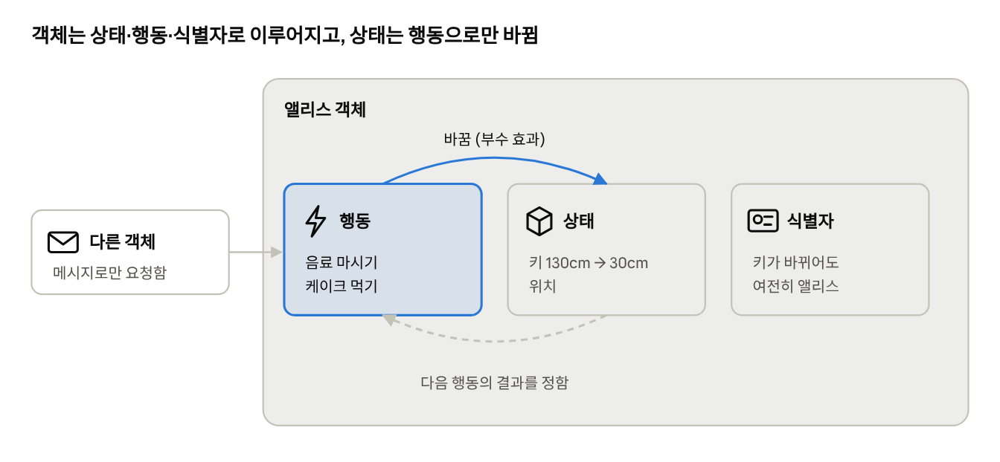
2장 한 장 그림 · 상태, 행동, 식별자
2장 전체를 한 장에 담은 그림임. 다른 객체는 메시지로 행동만 요청할 수 있고, 상태는 그 행동을 통해서만 바뀜.
들어가며
이 절의 맥락 1장은 객체들이 함께 일하는 방식을 다뤘음. 2장은 그 객체 하나의 내부를 들여다봄. 이 장을 읽고 나면 '객체란 무엇인가'라는 질문에 상태, 행동, 식별자라는 세 단어로 답할 수 있음.
요지 객체지향은 지식과 행동을 객체 안에 함께 담아 복잡성을 다루는 방법이며, 객체를 발견하는 일은 곧 지식과 행동을 구조화하는 일임.
2장은 레베카 워프스브록의 말로 시작함. 객체를 발견하고 창조하는 것은 지식과 행동을 구조화하는 문제라는 것임. 여기서 지식은 객체가 기억하는 정보, 행동은 그 정보를 가지고 할 수 있는 일을 뜻함.
왜 '함께' 담는 것이 중요한지는 반대 경우를 떠올리면 드러남. 데이터베이스 테이블은 계좌 번호와 잔액을 깔끔하게 저장하지만, 잔액이 충분한지 판단하는 일은 하지 않음. 그 판단은 테이블 바깥의 코드가 맡음. 판단하는 코드가 여러 곳에 생기면 규칙도 여러 벌이 되고, 한 곳만 고치면 나머지와 어긋남.
객체는 지식과 그 지식으로 할 일을 한 덩어리로 묶음. 잔액을 가진 계좌 객체가 출금 가능 여부도 스스로 판단함. 그래서 규칙이 한 곳에만 있고, 바깥은 '출금해 달라'고 부탁하기만 하면 됨. 저자는 이렇게 지식을 추상화하고 객체 안에 캡슐화하는 것이 실세계 문제의 복잡성을 관리하는 객체지향의 방법이라고 설명함.
그렇다면 그 '객체'는 정확히 무엇으로 이루어져 있는가? 2장은 이 질문에 상태, 행동, 식별자라는 세 요소로 답함.
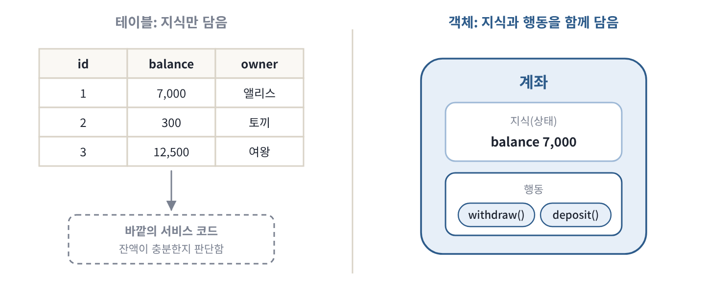
테이블은 데이터만 담고 판단은 바깥 코드가 함. 객체는 그 데이터로 할 일까지 함께 가짐
보충 · 실제 사례와 코드
레베카 워프스브록 책임 주도 설계(Responsibility-Driven Design)를 정립한 설계자로, 이 책 4장과 5장의 사상적 기반을 제공함. 대표 저서는 『Object Design: Roles, Responsibilities, and Collaborations』(2002)임. 이 책의 부제인 '역할, 책임, 협력'과 같은 단어로 이루어져 있다는 점에서, 저자가 워프스브록의 관점을 그대로 이어받았음을 알 수 있음.
한 줄 정리 객체 = 지식(상태) + 그 지식으로 할 일(행동)을 한 덩어리로 묶은 것
논의해 보기
Q. '지식과 행동을 함께 담는다'는 객체는 데이터베이스 테이블과 무엇이 다를까?
답 보기
테이블은 지식만 담고, 객체는 그 지식으로 할 일까지 함께 가짐.
테이블의 balance 칸은 7,000이라는 숫자를 기억할 뿐, 3,000원을 출금해도 되는지는 모름. 그 판단은 서비스 코드가 테이블에서 숫자를 꺼내 비교하는 식으로 이루어짐. 출금하는 화면이 세 군데라면 같은 비교가 세 군데에 생기고, 하나라도 빠뜨리면 잔액이 음수가 될 수 있음.
계좌 객체는 withdraw(3000)이라는 부탁을 받고 스스로 잔액을 확인함. 규칙이 객체 한 곳에만 있으므로 빠뜨릴 곳이 없고, 규칙이 바뀌어도 그 한 곳만 고치면 됨.
이 차이가 2.5의 '행동이 상태를 결정한다'로 이어짐. 테이블은 '무엇을 저장할까'에서 출발하지만, 객체는 '무슨 일을 할까'에서 출발해야 한다는 것임. 맨 끝 논쟁 ①(빈약한 도메인 모델)에서 실무 코드로 다시 다룸.
2.1 객체지향과 인지 능력
이 절의 맥락 객체를 정의하기 전에 저자는 사람이 세상을 어떻게 인식하는지부터 물음. 소프트웨어 객체도 사람이 '하나의 무엇'으로 인식할 수 있어야 다룰 수 있기 때문임.
요지 객체지향은 인간이 세상을 객체 단위로 인지한다는 사실에서 출발하지만, 그 목적은 현실의 모방이 아니라 새로운 세계의 창조임.
사람은 세상을 객체로 나누어 봄. 책상 위를 보면 '컵 하나, 펜 두 자루, 노트 한 권'처럼 개별적인 덩어리로 인식함. 저자는 객체를 '인간이 분명하게 인지하고 구별할 수 있는, 물리적 또는 개념적 경계를 지닌 어떤 것'으로 설명함.
무엇이 객체가 되는지에는 네 가지 조건이 있음. 하나, 둘 셀 수 있어야 하고, 다른 것과 경계가 분명해 구분되어야 하며, 언제 생겨났는지 말할 수 있는 생성 시점이 있어야 하고, 독립된 하나의 단위로 인식되어야 함. 물 한 컵은 객체지만 '물' 자체는 셀 수 없으므로 객체가 아님.
경계는 눈에 보이지 않아도 됨. 사과나 자동차는 경계가 눈에 보이는 물리적 객체임. 그런데 주문, 계좌, 시간표는 손으로 만질 수 없는데도 우리는 '주문 한 건', '계좌 두 개'처럼 세고 구분함. 사람의 인지 능력은 물리적 한계를 넘어, 생각으로 경계를 그어 객체를 만들어 냄. 이 두 끝 사이에 놓인 것들을 객체의 스펙트럼이라고 부를 수 있음.
세상을 작은 객체로 나누는 이유는 복잡함 때문임. 세상 전체를 한꺼번에 이해할 수는 없지만, 작은 덩어리로 나누면 하나씩 이해할 수 있음. 객체지향은 소프트웨어의 세계 역시 이렇게 인지할 수 있는 객체들로 이루어져 있다는 믿음에서 출발함.
그러나 닮은 것은 거기까지임. 실행 중인 프로그램의 내부는 현실과 매우 다름. 현실의 전등은 스스로 켜지지 않지만, 소프트웨어의 전등 객체는 turnOn()이라는 부탁을 받고 스스로 전원을 켬. 그래서 저자는 객체지향의 목적이 현실을 모방하는 것이 아니라 새로운 세계를 창조하는 것이라고 강조함. 이 주장은 2.6에서 은유라는 말로 마무리됨.
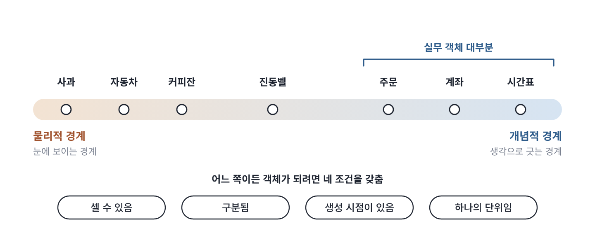
객체는 눈에 보이는 사물부터 생각으로 경계를 긋는 개념까지 이어지는 스펙트럼에 있음. 실무 객체 대부분은 오른쪽에 있음
보충 · 실제 사례와 코드
실무 객체의 대부분은 개념적 객체임 카페 주문 시스템을 예로 들면, 물리적 경계를 가진 것은 커피잔, 진동벨, 커피 머신 정도임. 반면 시스템의 중심에 있는 주문, 예약, 할인 정책, 결제, 일정은 모두 손으로 만질 수 없는 개념적 객체임.
이 점만 보아도 '현실 사물을 관찰해서 본뜬다'는 설명이 왜 부족한지 알 수 있음. 할인 정책은 현실에 본뜰 원본이 없음. 사람들이 합의한 규칙이 있을 뿐이고, 그 규칙에 경계를 그어 객체로 만드는 것은 설계자의 몫임.
한 줄 정리 객체는 셀 수 있고 구분되는 단위이며, 그 경계는 눈에 보이지 않아도 됨. 목적은 모방이 아니라 창조임.
논의해 보기
Q1. 지금 쓰는 서비스에서 개념적 객체를 세 개 찾아보자. 그중 현실에 짝이 있는 것은 몇 개인가?
답 보기
대부분 현실에 짝이 없거나, 있어도 모양이 전혀 다름.
쇼핑 앱이라면 장바구니, 쿠폰, 배송 추적을 들 수 있음. 장바구니는 현실에도 있지만 현실의 장바구니는 합계를 계산하지 않음. 쿠폰은 종이 쿠폰이 있지만 스스로 유효기간을 확인하지 않음. 배송 추적은 아예 현실에 짝이 되는 사물이 없음.
이렇게 직접 세어 보면 '현실을 모방한다'는 설명이 설계에 거의 도움이 안 된다는 것을 확인할 수 있음. 본뜰 원본이 없거나, 원본보다 훨씬 많은 일을 하기 때문임. 2.6.2의 의인화가 바로 이 차이를 설명하는 말임.
Q2. 숫자 1,000은 객체가 아니라는데, Money 클래스는 객체일까?
답 보기
숫자 1,000은 재료일 뿐이지만, '금액'이라는 개념과 규칙을 담으면 의미를 가진 값 객체가 됨.
1,000이라는 숫자는 1,000원일 수도, 1,000개일 수도, 1,000미터일 수도 있음. 숫자만으로는 무엇인지 알 수 없고, 음수가 되면 안 된다는 규칙도 없음. 그래서 책은 숫자, 문자열 같은 단순한 값을 객체의 상태를 표현하는 재료로 봄.
Money는 숫자에 '금액'이라는 의미를 붙이고, 음수 금지나 통화 단위 같은 규칙을 함께 담음. 다른 금액과 더하는 plus() 같은 행동도 가질 수 있음. 다만 식별자가 없어서 1,000원은 어디에 있든 같은 1,000원임. 이런 객체를 값 객체라고 부르며, 2.3.3에서 자세히 다룸.
2.2 객체, 그리고 이상한 나라
이 절의 맥락 추상적인 정의 대신 앨리스라는 구체적인 인물을 먼저 보여 줌. 앨리스에게서 관찰한 세 가지 특징은 다음 절에서 상태, 행동, 식별자라는 용어로 정리됨.
2.2.1 이상한 나라의 앨리스
요지 저자는 『이상한 나라의 앨리스』에서 키가 계속 바뀌는 앨리스를 통해 객체의 특성을 설명함.
앨리스는 하얀 토끼를 쫓아 굴에 들어갔다가 아주 작은 문 앞에 섬. 문 너머에 아름다운 정원이 보이지만, 앨리스의 키로는 그 문을 지날 수 없음.
이야기 속에서 앨리스의 키는 행동에 따라 계속 바뀜. '나를 마셔요'라고 적힌 음료를 마시면 작아지고, '나를 먹어요'라고 적힌 케이크를 먹으면 천장에 머리가 닿을 만큼 커짐. 토끼가 떨어뜨린 부채로 부채질을 하면 다시 작아짐.
여기서 눈여겨볼 점은 문을 지날 수 있는지가 그 시점의 키에 달려 있다는 것임. 같은 앨리스가 같은 문 앞에 서도, 방금 무엇을 먹고 마셨느냐에 따라 결과가 달라짐. 저자는 이 '시간에 따라 상태가 바뀌는 존재'라는 특징을 객체를 설명하는 출발점으로 삼음.
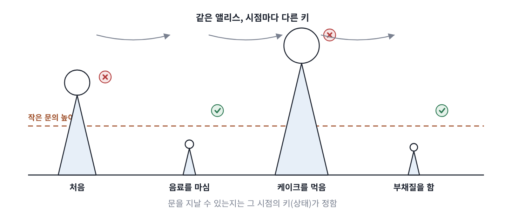
행동이 키를 바꾸고, 지금의 키가 문을 지날 수 있는지를 정함
한 줄 정리 앨리스는 행동에 따라 키가 바뀌고, 지금의 키가 다음 행동의 결과를 정하는 존재임.
2.2 객체, 그리고 이상한 나라
2.2.2 앨리스 객체
요지 앨리스의 행동에서 객체의 세 가지 핵심 특성, 즉 상태, 행동, 식별자를 읽어 낼 수 있음.
앨리스 이야기에서 저자가 뽑아내는 특징은 세 가지임.
첫째, 앨리스는 상태를 가지며, 그 상태는 바뀜. 키라는 상태가 130cm에서 30cm로, 다시 300cm로 계속 변함.
둘째, 상태를 바꾸는 것은 앨리스 자신의 행동임. 누가 앨리스의 키를 바깥에서 고쳐 주는 것이 아니라, 앨리스가 마시고 먹고 부채질하는 행동이 키를 바꿈. 그리고 행동의 결과는 상태에 따라 달라지므로 상태를 이용해 서술할 수 있음. '문을 지날 수 있다'는 결과는 '지금 키가 문보다 작다'는 상태로 설명됨.
셋째, 앨리스는 어떤 상태에 있더라도 앨리스임. 키가 30cm이든 300cm이든 같은 사람이고, 다른 사람과 헷갈리지 않음. 이것이 식별 가능성임.
행동과 상태는 서로를 정함. 행동이 상태를 바꾸고, 바뀐 상태가 다음 행동의 결과를 정함. 그래서 행동의 순서가 결과를 바꿈. 케이크를 먹고 음료를 마시면 마지막 키는 작아서 문을 지날 수 있지만, 음료를 마시고 케이크를 먹으면 마지막 키가 커서 지날 수 없음. 같은 두 행동이라도 순서에 따라 결과가 달라지는 것임.
이 관찰에서 한 가지 문제가 생김. 앨리스가 문을 지날 수 있는지 알려면 지금까지 무엇을 어떤 순서로 먹고 마셨는지 전부 따져야 하는가? 2.3.1은 이 문제를 풀기 위해 사람이 '상태'라는 개념을 만들었다고 설명함.
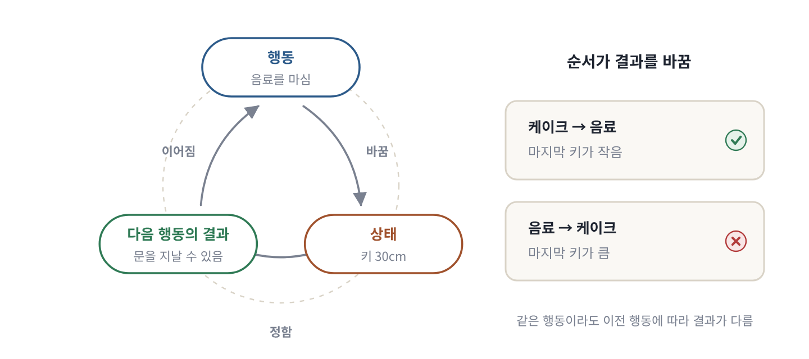
행동이 상태를 바꾸고, 상태가 다음 행동의 결과를 정함. 그래서 행동의 순서가 결과를 바꿈
참고로 『이상한 나라의 앨리스』의 작가 루이스 캐럴의 본명은 찰스 루트위지 도지슨(Charles Lutwidge Dodgson)으로, 옥스퍼드의 수학자였음.
보충 · 실제 사례와 코드
앨리스를 코드로 옮기기 아래 코드에서 볼 것은 상태, 행동, 식별자가 코드의 어느 부분에 해당하는지임. 특히 마지막 줄에서 행동의 순서가 결과를 바꾼다는 점을 확인하면 됨.
class Alice {
private int height = 130; // ① 상태: 지금의 키
void drinkBeverage() { height -= 100; } // ② 행동: 키를 줄임
void eatCake() { height += 100; } // ② 행동: 키를 늘림
boolean canPassThrough(Door door) { // ③ 결과가 상태에 달린 행동
return height <= door.height();
}
}
Alice alice = new Alice(); // ④ 식별자: alice라는 하나의 객체
alice.eatCake(); // 키 230
alice.drinkBeverage(); // 키 130
alice.canPassThrough(door); // ⑤ 지금 키(130)로 판단함
①의 height가 상태임. private이므로 바깥에서는 직접 고칠 수 없음.
②의 두 메서드가 상태를 바꾸는 행동임. 키는 오직 이 행동들로만 바뀜.
③은 결과가 상태에 달린 행동임. 같은 문이라도 지금 키에 따라 true가 되기도 하고 false가 되기도 함.
④의 alice는 키가 몇 번 바뀌어도 같은 객체임. 이것이 식별자의 역할임.
⑤에서 canPassThrough는 지금까지의 이력을 따지지 않고 height 하나만 봄. 두 행동의 순서를 바꾸면 중간에 거치는 키가 달라지고, 행동이 더 많아지면 마지막 결과도 달라질 수 있음.
정리하면, 이 짧은 코드 안에 상태(①), 행동(②③), 식별자(④)가 모두 들어 있음. 2.3에서 각각을 하나씩 자세히 다룸.
한 줄 정리 객체는 상태를 가지고, 그 상태는 자기 행동으로만 바뀌며, 상태가 바뀌어도 같은 객체로 식별됨.
논의해 보기
Q. '행동의 순서가 결과를 바꾼다'는 것을 버그로 겪어 본 적이 있는가?
답 보기
대표적인 예는 초기화 전에 호출하기, 결제 전에 배송하기, 로그인 전에 주문하기임.
세 경우 모두 행동 자체는 올바르지만 순서가 틀려서 문제가 됨. 배송 기능은 잘 작동하는데, 결제가 끝나지 않은 주문에 대해 호출되면 돈을 받지 않고 물건을 보내게 됨. 앨리스가 케이크와 음료를 거꾸로 먹어 문을 못 지나는 것과 같은 구조임.
이런 버그를 막는 방법은 객체가 자기 상태를 보고 지금 그 행동이 가능한지 스스로 확인하게 만드는 것임. 주문 객체가 ship() 요청을 받으면 자기 상태가 '결제 완료'인지 먼저 확인하고, 아니라면 거절함. 바깥 코드가 순서를 지켜 주기를 기대하지 않고, 상태를 가진 객체가 지키는 것임.
이것이 2.3.2의 '상태는 객체 자신만 다룬다'와 2.5의 '행동이 상태를 결정한다'로 이어지는 생각임.
2.3 객체, 그리고 소프트웨어 나라
이 절의 맥락 2장의 중심이 되는 절임. 2.2에서 앨리스에게서 관찰한 특징을 소프트웨어 용어로 옮기고, 각 요소가 왜 필요한지 하나씩 설명함.
하나의 개별적인 실체로 식별할 수 있는 것이라면 물리적인 것이든 개념적인 것이든 객체가 될 수 있음. 저자는 객체를 상태, 행동, 식별자를 지닌 실체로 보는 것이 가장 효과적이라고 말함.
이 절에는 프로퍼티, 속성, 링크, 쿼리, 명령, 엔티티, 값 객체처럼 새로운 용어가 한꺼번에 나옴. 처음 읽으면 헷갈리기 쉬우므로, 아래 그림으로 각 용어가 어디에 속하는지 먼저 잡아 두고 읽으면 좋음.
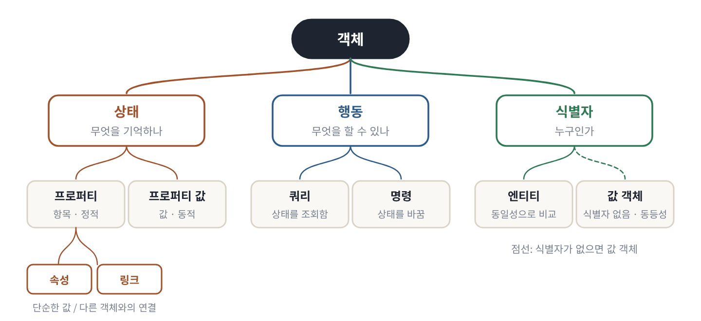
2.3에서 나오는 용어가 서로 어떻게 포함되는지 보여 주는 해부도. 객체는 상태, 행동, 식별자로 나뉘고 각각 다시 갈라짐
2.3 객체, 그리고 소프트웨어 나라
2.3.1 상태
요지 상태는 과거 행동의 결과를 요약한 정보이며, 덕분에 지금의 값만 보고도 다음 행동의 결과를 판단할 수 있음.
왜 상태가 필요한가? 2.2.2에서 본 것처럼 어떤 행동의 결과는 과거에 어떤 행동이 있었는지에 달려 있음. 자판기는 돈을 넣은 뒤에야 음료를 고를 수 있고, 항공권을 발권한 뒤에야 비행기에 탈 수 있음.
그런데 결과를 판단할 때마다 과거의 모든 행동을 처음부터 따지는 것은 번거롭고 이해하기도 어려움. 자판기가 음료를 내줄 때마다 지금까지 들어온 동전을 하나하나 다시 센다고 생각하면 알 수 있음.
그래서 사람은 상태라는 개념을 만들었음. 과거의 이력을 '지금 잔액 1,200원'처럼 값 하나로 요약해 두면, 이력을 다시 따지지 않고 그 값만 보고 판단할 수 있음. 앨리스의 경우에도 '지금 키'와 '문의 높이'만 알면 문을 지날 수 있는지 바로 알 수 있음.
상태는 무엇으로 이루어지는가? 세상의 모든 것이 객체는 아님. 숫자, 문자열, 날짜, 참과 거짓 같은 단순한 값은 그 자체로는 객체가 아니고, 객체의 상태를 표현하는 재료로 쓰임. 객체의 상태는 이런 단순한 값과 다른 객체를 조합해 표현함.
상태를 이루는 특징 하나하나를 프로퍼티(property)라고 함. 앨리스의 '키'와 '위치'가 프로퍼티임. 프로퍼티는 어떤 항목이 있는지를 말하므로 잘 바뀌지 않음. 즉 정적임.
반면 특정 시점에 그 프로퍼티가 가진 값을 프로퍼티 값이라고 함. 키가 130cm에서 30cm로 바뀌는 것처럼 시간에 따라 계속 바뀜. 즉 동적임. 정리하면 상태는 '정적인 프로퍼티'와 '동적인 프로퍼티 값'으로 이루어짐.
프로퍼티는 다시 두 종류로 나뉨. 키처럼 단순한 값으로 표현되는 것은 속성(attribute)이고, 앨리스가 들고 있는 음료처럼 다른 객체와의 의미 있는 연결은 링크(link)임. 링크가 중요한 이유는, 링크가 있어야 그 객체에게 메시지를 보낼 수 있기 때문임. 앨리스는 음료와 연결되어 있어서 음료에게 '마셔졌다'고 알릴 수 있음.
상태는 객체 자신만 다룸. 객체는 자율적인 존재이므로, 다른 객체가 이 객체의 상태에 직접 접근하거나 바꿀 수 없음. 앨리스의 키는 앨리스의 행동으로만 바뀜. 이 원칙이 다음 절의 '행동'과 '캡슐화'로 이어짐.
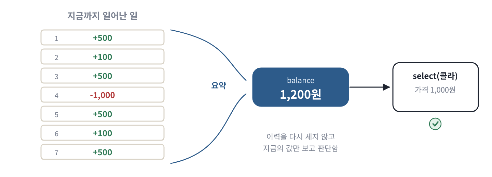
상태는 지금까지의 이력을 값 하나로 요약한 것임. 그래서 현재 값만 보고 다음 행동을 판단할 수 있음
보충 · 실제 사례와 코드
코드에서 속성과 링크 구분하기 아래 코드에서 볼 것은 세 필드 중 어느 것이 속성이고 어느 것이 링크인지, 그리고 링크가 어디에 쓰이는지임.
class Alice {
private Length height; // ① 속성: 단순한 값(키)
private Location position; // ① 속성: 단순한 값(위치)
private Beverage beverage; // ② 링크: 다른 객체(음료)와의 연결
void drink() {
beverage.drunk(); // ③ 링크를 통해 음료에게 메시지를 보냄
height = height.shrink(); // ④ 자기 상태(속성)를 바꿈
}
}
①의 height와 position은 속성임. 앨리스를 설명하는 값일 뿐, 스스로 무슨 일을 하지는 않음.
②의 beverage는 링크임. 단순한 값이 아니라 자기 행동을 가진 다른 객체를 가리킴.
③에서 링크가 쓰임. 앨리스는 링크가 있기 때문에 음료 객체에게 drunk()라는 메시지를 보낼 수 있음.
④에서는 자기 속성을 바꿈. 바깥 누구도 height를 직접 건드리지 않음.
자판기로 본 상태의 효용 다음 코드에서 볼 것은 balance라는 필드 하나가 지금까지의 투입 이력 전체를 대신한다는 점임.
class VendingMachine {
private int balance; // ① 투입 이력을 요약한 상태
void insert(int coin) { balance += coin; } // ② 행동이 상태를 바꿈
Drink select(Drink drink) {
if (balance < drink.price()) // ③ 지금 값만 보고 판단함
throw new IllegalStateException("금액이 부족합니다");
balance -= drink.price(); // ④ 판단 후 상태를 다시 바꿈
return drink;
}
}
①의 balance는 지금까지 넣은 동전과 이미 산 음료를 모두 반영한 값 하나임.
②의 insert가 호출될 때마다 이 값이 갱신됨. 이력이 쌓이는 대신 요약이 갱신되는 것임.
③에서 음료를 고를 수 있는지 판단할 때는 balance 하나만 봄. 동전을 다시 셀 필요가 없음.
④에서 음료 값을 빼서 다음 판단을 위한 새 요약을 만듦.
balance가 없다면 음료를 고를 때마다 지금까지 넣은 동전과 산 음료를 모두 다시 계산해야 함. 상태는 과거 행동의 결과를 한 값으로 압축해, 현재 시점의 판단을 단순하게 만듦.
한 줄 정리 상태 = 과거 행동의 요약. 프로퍼티(속성 + 링크)와 프로퍼티 값으로 이루어지며, 객체 자신만 바꿀 수 있음.
2.3 객체, 그리고 소프트웨어 나라
2.3.2 행동
요지 상태는 행동을 통해서만 바뀌고, 상태를 행동 뒤로 감추면 객체는 자율적이 됨.
상태는 저절로 바뀌지 않음. 상태를 바꾸는 것은 객체 자신의 행동뿐임. 이렇게 행동의 결과로 상태가 바뀌는 것을 부수 효과(side effect)라고 함. 앨리스가 음료를 마신 결과 키가 줄어드는 것이 부수 효과임.
상태와 행동은 두 방향으로 연결됨. 행동은 상태에 영향을 받고(키가 작아야 문을 지남), 행동은 상태를 바꿈(음료를 마시면 키가 줄어듦). 2.2.2에서 본 순환이 바로 이것임.
행동은 협력을 위해 존재함. 1장에서 보았듯이 객체는 혼자 일하지 않고 다른 객체와 협력함. 객체가 협력에 참여하는 방법이 행동이고, 행동의 결과는 두 가지로 나타남. 하나는 자기 상태를 바꾸는 것, 다른 하나는 협력하는 다른 객체에게 메시지를 보내는 것임.
앨리스가 음료를 마시면 두 가지가 함께 일어남. 앨리스의 키가 줄어들고(자기 상태 변경), 음료에게 '마셔졌다'는 메시지를 보내 음료의 양도 줄어듦(다른 객체에게 메시지 전송).
그래서 저자는 행동을 '외부의 요청 또는 수신된 메시지에 응답하기 위해 동작하고 반응하는 활동'이라고 정의함. 객체는 행동으로 협력에 참여하므로, 행동은 바깥에 드러나 있어야 함.
상태는 감추고 행동만 드러냄. 여기서 2장의 중요한 원칙이 나옴. 메시지를 보내는 쪽은 받는 쪽의 상태가 어떻게 바뀌는지 알지 못함. 상태가 바뀐다는 사실조차 모를 수 있음.
앨리스는 음료에게 '마셔졌다'고 알릴 뿐, 음료의 양이 몇 ml 줄어드는지, 다 마시면 빈 병이 되는지는 모름. 그 메시지를 해석하고 상태를 바꿀지 결정하는 것은 전적으로 음료의 판단임.
이렇게 상태를 잘 정의된 행동 뒤로 감추는 것을 상태 캡슐화라고 함. 캡슐화하면 객체는 자기 상태를 스스로 책임지는 자율적인 존재가 되고, 바깥은 메시지만 알면 되므로 협력이 단순하고 유연해짐. 음료의 내부 구현이 바뀌어도 앨리스는 고칠 것이 없음.
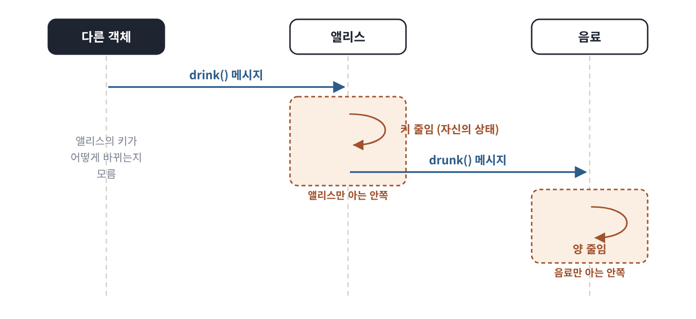
행동의 결과는 자기 상태를 바꾸거나 다른 객체에 메시지를 보내는 것임. 상태가 어떻게 바뀌는지는 받는 쪽만 앎
보충 · 실제 사례와 코드
송신자가 모르는 상태 변경을 코드로 보기 아래 코드에서 볼 것은 Alice 클래스 어디에도 음료의 양(amount)이 나오지 않는다는 점임.
class Alice {
private Length height;
void drink(Beverage beverage) {
beverage.drunk(quantity); // ① 음료에게 메시지만 보냄
height = height.shrink(); // ② 자기 상태를 바꿈
}
}
class Beverage {
private int amount; // ③ 음료만 아는 상태
void drunk(int quantity) {
amount -= quantity; // ④ 메시지를 받고 스스로 상태를 바꿈
}
}
①에서 앨리스는 음료에게 '이만큼 마셔졌다'는 메시지를 보낼 뿐임. 행동의 결과 중 '다른 객체에게 메시지 전송'에 해당함.
②에서 앨리스는 자기 키를 줄임. 행동의 결과 중 '자기 상태 변경'에 해당함.
③의 amount는 private이라 앨리스는 이 필드를 볼 수 없음.
④에서 음료가 메시지를 해석해 스스로 양을 줄임. 앨리스는 이 줄이 있는지조차 모름.
나중에 음료가 '다 마시면 빈 병 상태로 바뀐다'는 규칙이 생겨도 Beverage만 고치면 됨. 이것이 캡슐화가 협력을 유연하게 만드는 방식임.
부수 효과에 대한 두 패러다임의 태도 함수형 프로그래밍은 부수 효과를 가능한 한 피함. 같은 입력에는 언제나 같은 출력을 내고 바깥 상태를 바꾸지 않는 순수 함수를 지향함. 반면 객체지향은 상태 변경을 인정하되, 그 범위를 객체 내부로 가두고 행동을 통해서만 일어나게 함. 두 방식은 '변경을 통제한다'는 같은 목표를 다른 길로 이루는 셈이며, 맨 끝 논쟁 ④에서 다시 다룸.
스터디에서 '상태가 없는 함수도 객체인가'라는 질문이 나왔고, 보는 관점에 따라 다르다는 데 의견이 모였음. 이 책의 기준으로 보면 상태와 식별자가 없는 순수 함수는 객체보다 '행동' 그 자체에 가까움.
한 줄 정리 행동 = 메시지에 응답하는 활동. 결과는 자기 상태 변경과 다른 객체에게 메시지 전송이며, 상태는 행동 뒤에 감춤.
2.3 객체, 그리고 소프트웨어 나라
2.3.3 식별자
요지 객체는 상태가 바뀌어도 식별자로 구별되며, 이것이 값과 객체의 가장 큰 차이임.
식별자는 어떤 객체를 다른 객체와 구별하는 데 쓰는 프로퍼티임. 앨리스가 키가 바뀌어도 앨리스인 것처럼, 객체는 상태가 바뀌어도 식별자로 같은 존재임을 알 수 있음.
값과 객체는 무엇이 다른가? 숫자 5, 1,000원, 2026년 11월 2일 같은 값(value)은 바뀌지 않음. 5는 언제까지나 5이고, 5가 6으로 바뀌는 일은 없음. 그래서 값은 식별자가 필요 없고, 두 값이 같은지는 상태가 같은지로만 판단함. 이를 동등성(equality)이라고 함.
반면 앨리스, 회원, 주문 같은 객체는 시간에 따라 상태가 바뀜. 상태가 바뀌어도 같은 것으로 계속 추적해야 하므로 식별자가 필요하고, 두 객체가 같은지는 식별자가 같은지로 판단함. 이를 동일성(identity)이라고 함. 상태가 달라도 식별자가 같으면 같은 객체이고, 상태가 같아도 식별자가 다르면 다른 객체임.
왜 용어가 헷갈리는가? 대부분의 객체지향 언어에서는 값과 객체를 모두 클래스로 만들기 때문에 둘을 혼동하기 쉬움. Money도 클래스이고 Member도 클래스임. 그래서 둘을 구분하는 용어를 따로 씀. 식별자를 가진 전통적인 객체는 참조 객체(reference object) 또는 엔티티(entity)라고 부르고, 식별자 없이 값처럼 다루는 객체는 값 객체(value object)라고 부름.
엔티티로 만들지 값 객체로 만들지 헷갈릴 때는 질문 하나로 판단할 수 있음. '상태가 바뀌어도 같은 것으로 계속 추적해야 하는가?' 그렇다면 엔티티(회원, 주문, 계좌), 아니라면 값 객체(금액, 날짜, 주소)임.
2.3의 종합 지금까지를 앨리스로 다시 정리하면, 객체는 상태를 가지며 그 상태는 바뀜. 상태를 바꾸는 것은 객체 자신의 행동이고, 행동의 결과는 상태에 달려 있으며 행동의 순서가 결과에 영향을 줌. 그리고 객체는 어떤 상태에 있더라도 유일하게 식별됨.
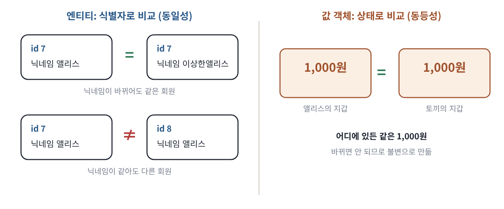
엔티티는 상태가 달라도 식별자가 같으면 같은 것(동일성)이고, 값 객체는 상태가 같으면 같은 것(동등성)임
보충 · 실제 사례와 코드
코드로 본 동등성과 동일성 아래 코드에서 볼 것은 두 클래스가 equals(같은지 비교하는 메서드)를 서로 다른 기준으로 정의한다는 점임.
record는 Java 16부터 생긴 문법으로, 불변 데이터 클래스를 한 줄로 만들고 모든 필드를 비교하는 equals를 자동으로 만들어 줌.
// 값 객체: 상태가 같으면 같은 것
record Money(long amount) { } // ① 필드 전체로 비교함
new Money(1000).equals(new Money(1000)); // ② true: 동등함
// 엔티티: 식별자가 같으면 같은 것
class Member {
private final Long id; // ③ 식별자: 바뀌지 않음
private String nickname; // ④ 바뀔 수 있는 상태
@Override
public boolean equals(Object o) {
return o instanceof Member other && id.equals(other.id); // ⑤ id만 비교함
}
}
①의 record는 amount를 비교하는 equals를 자동으로 가짐.
②에서 따로 만든 두 Money가 같다고 나옴. 상태(1,000)가 같기 때문임. 이것이 동등성임.
③의 id는 final이라 한번 정해지면 바뀌지 않음. 이 값이 회원을 구별함.
④의 nickname은 회원이 언제든 바꿀 수 있는 상태임.
⑤에서 equals는 id만 비교함. 닉네임이 달라도 id가 같으면 같은 회원이고, 닉네임이 같아도 id가 다르면 다른 회원임. 이것이 동일성임.
값 객체를 불변으로 만드는 이유 값은 여러 곳에서 공유되기 쉬움. 그런데 값이 바뀔 수 있으면, 한 곳에서 바꾼 것이 공유하던 다른 곳까지 몰래 바꿈. 대표적인 예가 Java의 java.util.Date임. 이 클래스는 가변이라 공유했을 때 버그가 잦았고, Java 8에서 도입된 java.time의 날짜 클래스들은 모두 불변으로 다시 설계되었음.
그래서 값 객체는 불변으로 만들고, 바꾸고 싶으면 새 값을 만들어 돌려주는 방식을 씀. 예를 들어 money.plus(other)는 기존 money를 바꾸지 않고 더한 결과를 담은 새 Money를 반환함.
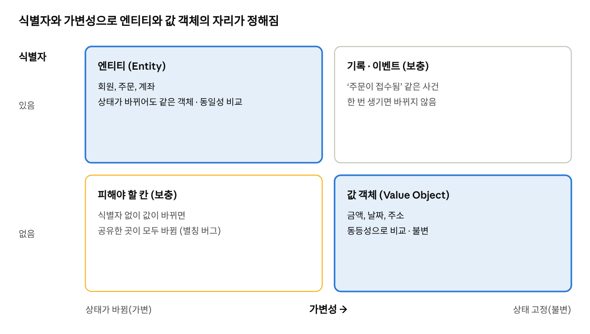
2×2 매트릭스 · 식별자 × 가변성
책이 다루는 것은 엔티티(식별자 있음, 가변)와 값 객체(식별자 없음, 불변) 두 칸임. 나머지 두 칸은 실무를 위한 보충임. 식별자가 없는데 상태가 바뀌는 칸이 왜 위험한지가 위의 Date 이야기임.
한 줄 정리 엔티티 = 식별자로 비교(동일성), 가변. 값 객체 = 상태로 비교(동등성), 불변.
논의해 보기
Q1. 상태를 public 필드로 열어 두면 무슨 일이 생길까?
답 보기
누구나 규칙을 거치지 않고 상태를 바꿀 수 있게 되어, 잘못된 상태가 생겨도 막을 수 없고 원인도 찾기 어려워짐.
계좌의 balance가 public이면 어떤 코드든 account.balance = -5000이라고 쓸 수 있음. withdraw() 안에 '잔액이 부족하면 거절한다'는 규칙을 아무리 잘 만들어도, 그 규칙을 거치지 않는 길이 열려 있으므로 소용이 없음.
게다가 잔액이 음수가 된 것을 발견해도 어디서 바꿨는지 찾기 어려움. balance를 건드리는 곳이 프로젝트 전체에 흩어질 수 있기 때문임. private으로 감추고 행동으로만 바꾸게 하면, 상태를 바꾸는 곳이 객체 안의 몇 메서드로 좁혀짐.
이것이 2.3.2의 '상태는 행동 뒤에 감춘다'의 실무적 의미이고, 2.4의 '버튼만 보이는 기계'로 이어짐.
Q2. 엔티티의 equals를 모든 필드로 비교하면 어떻게 될까?
답 보기
닉네임 하나만 바꿔도 다른 회원으로 판단되어, 같은 회원을 추적할 수 없게 됨.
예를 들어 회원 목록에서 '이 회원이 이미 있는가'를 equals로 확인한다고 함. 모든 필드로 비교하면, 닉네임을 바꾼 회원은 목록에 없는 새 회원으로 판단되어 중복으로 추가될 수 있음. 집합(Set)이나 맵(Map)의 키로 쓸 때도 상태가 바뀌는 순간 찾지 못하게 됨.
반대로 Money를 id로 비교하면 같은 1,000원 두 개가 다르다고 나옴. 엔티티는 식별자로, 값 객체는 상태로 비교해야 하는 이유가 바로 이것임. JPA처럼 데이터베이스와 연결하는 도구를 쓸 때 이 구분을 놓쳐 생기는 버그가 실무에서 특히 흔함.
2.4 기계로서의 객체
이 절의 맥락 2.3에서 나눠 본 상태, 행동, 식별자를 하나의 그림으로 묶는 은유임. 밖에서 보이는 것과 보이지 않는 것을 나눠 보면, 캡슐화가 무엇을 지키는지 분명해짐.
요지 객체를 기계에 비유하면, 바깥은 버튼으로만 객체를 다룰 수 있다는 캡슐화의 의미를 직관적으로 이해할 수 있음.
객체에 대한 두 종류의 요청 객체에게 보내는 요청은 둘로 나뉨. 객체의 상태를 묻기만 하는 것은 쿼리(query)이고, 객체의 상태를 바꾸는 것은 명령(command)임. 앨리스에게 '지금 키가 몇이야?'라고 묻는 것은 쿼리이고, '음료를 마셔'라고 하는 것은 명령임.
기계 은유 저자는 객체를 기계에 비유함. 기계의 부품은 단단한 외피 안에 감춰져 있어서, 분해하지 않는 한 안을 볼 수 없음. 사람은 기계 바깥에 붙은 버튼으로만 기계를 다룸.
앨리스 기계에는 두 종류의 버튼이 있음. 사각형 버튼은 상태를 바꾸는 명령이고(음료 마시기, 케이크 먹기), 둥근 버튼은 상태를 알려 주는 쿼리임(지금 키, 지금 위치). 명령과 쿼리 모두 객체가 바깥에 제공하는 행동임.
은유가 강조하는 것 버튼이 아닌 방법으로는 기계를 쓸 수 없다는 점임. 외피를 뜯고 안의 톱니바퀴를 직접 돌릴 수는 없음. 이것이 2.3.2에서 본 캡슐화를 그림으로 표현한 것임.
또 하나, 기계는 식별자도 보여 줌. 똑같이 생긴 기계 두 대가 있어도 각자 다른 기계이고, 한 대의 버튼을 누른다고 다른 한 대의 상태가 바뀌지 않음. 여러 기계를 선(링크)으로 연결하면, 기계들이 서로의 버튼을 눌러 메시지를 주고받는 협력의 모습까지 표현할 수 있음.
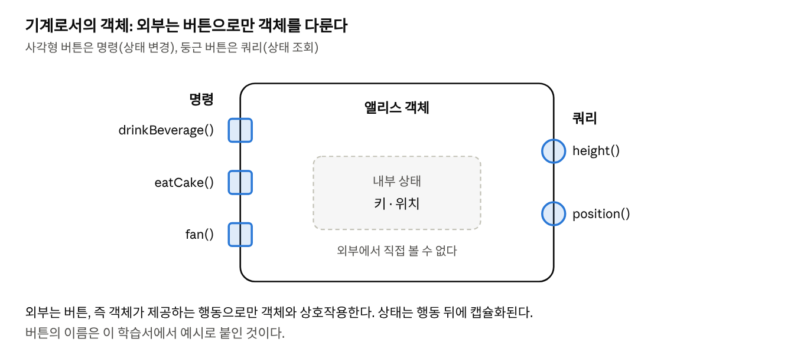
앨리스 객체를 기계로 표현한 그림임. 바깥은 명령과 쿼리 버튼으로만 객체를 다루며, 내부 상태는 보이지 않음
보충 · 실제 사례와 코드
명령-쿼리 분리 원칙 기계 은유에서 버튼이 두 종류로 나뉜 데는 이유가 있음. 버트런드 마이어는 하나의 메서드는 명령이거나 쿼리 중 하나여야 하며, 둘을 동시에 해서는 안 된다고 제안했음. 이를 명령-쿼리 분리(Command-Query Separation, CQS)라고 함.
아래 코드에서 볼 것은 첫 번째 메서드가 이름 그대로 두 가지 일을 한꺼번에 한다는 점임.
// 바람직하지 않은 예: 상태를 바꾸면서 값도 돌려줌
int withdrawAndGetBalance(int amount) { ... } // ① 명령 + 쿼리
// 바람직한 예: 명령과 쿼리를 나눔
void withdraw(int amount) { ... } // ② 명령: 바꾸기만 함
int balance() { ... } // ③ 쿼리: 묻기만 함
①은 출금(명령)과 잔액 조회(쿼리)를 한꺼번에 함. 잔액만 알고 싶어도 이 메서드를 부르면 출금이 일어남.
②의 withdraw는 상태를 바꾸기만 하고 아무것도 돌려주지 않음.
③의 balance는 상태를 알려 주기만 하고 아무것도 바꾸지 않음. 그래서 몇 번을 불러도 안전함.
쿼리는 몇 번을 호출해도 상태를 바꾸지 않으므로 안심하고 부를 수 있고, 테스트할 때도 결과를 확인하는 데 마음껏 쓸 수 있음. 명령과 쿼리가 섞이면 '조회만 했는데 값이 바뀌는' 버그가 생기기 쉬움.
다만 stack.pop()처럼 꺼내면서 값을 돌려주는 관례적 예외도 있음. 이 원칙을 시스템 구조 수준으로 넓힌 것이 CQRS(Command Query Responsibility Segregation, 명령과 조회의 책임 분리)이며, 3장 논쟁 ①의 이벤트 소싱과 자주 함께 쓰임.
한 줄 정리 쿼리는 상태를 묻고, 명령은 상태를 바꿈. 바깥은 이 두 종류의 버튼으로만 객체를 다룸.
논의해 보기
Q. Stack.pop()이나 Iterator.next()는 명령일까, 쿼리일까?
먼저 두 메서드를 풀어 보면, Stack.pop()은 스택(접시 쌓기처럼 마지막에 넣은 것을 먼저 꺼내는 자료구조)에서 맨 위 값을 꺼내 돌려주면서 그 값을 스택에서 지움. Iterator.next()는 목록을 하나씩 훑는 반복자가 지금 위치의 값을 돌려주면서 위치를 다음 칸으로 옮김.
답 보기
둘 다임. 값을 알려 주는 쿼리이면서 동시에 상태를 바꾸는 명령이라, CQS의 대표적인 예외로 자주 언급됨.
pop()을 부르면 맨 위 값을 받는 동시에 스택의 크기가 하나 줄어듦. 그래서 '맨 위가 뭔지 보기만 하려고' pop()을 부르면 값이 사라지는 버그가 생김. 이 문제 때문에 많은 스택 구현은 보기만 하는 peek()을 따로 제공함. pop()은 '꺼내서 쓰기'라는 흔한 쓰임새 때문에 남겨 둔 관례적 예외인 셈임.
next()도 같음. 같은 반복자에서 next()를 두 번 부르면 두 번째에는 다른 값이 나옴. 디버깅하다가 값을 확인하려고 next()를 한 번 더 부르면 프로그램의 흐름이 바뀌어 버림.
그래서 직접 설계할 때는 나누는 쪽을 기본으로 삼는 것이 안전함. 꼭 합쳐야 한다면 pop처럼 이름에 '꺼낸다'는 동작이 드러나게 짓는 것이 좋음.
2.5 행동이 상태를 결정한다
이 절의 맥락 앞 절들이 객체의 구조를 설명했다면, 이 절은 그 구조를 설계할 때 어디서부터 시작할지를 말함. 2장에서 실무에 가장 가까운 절이며, 4장과 5장의 책임 주도 설계로 이어짐.
요지 객체를 설계할 때는 상태가 아니라 행동에서 출발해야 함. 행동이 상태를 결정함.
초보자가 빠지기 쉬운 함정 객체를 처음 설계할 때 많은 사람이 '이 객체는 어떤 데이터를 가져야 하지?'부터 생각함. 커피라면 이름, 가격, 크기, 온도, 만든 시각을 먼저 적고, 그다음 그 데이터에 맞춰 행동을 붙이는 식임. 자연스러워 보이지만, 저자는 이 순서가 세 가지 문제를 만든다고 말함.
첫째, 캡슐화가 깨짐. 상태가 먼저 정해지면, 그 상태를 바깥에서 쓸 수 있게 getter와 setter로 열어 두기 쉬움. 그러면 상태가 공용 인터페이스에 그대로 드러남.
둘째, 객체가 고립된 섬이 됨. 상태를 먼저 생각하면 '이 객체가 누구와 어떤 일을 하는가'라는 협력의 문맥을 놓침. 그 결과 데이터는 잘 담겨 있지만 협력에는 맞지 않는 객체가 만들어짐.
셋째, 재사용이 어려워짐. 특정 데이터 구조에 맞춰 만든 객체는 다른 협력에 끼워 넣기 어려움.
행동에서 출발하기 저자가 권하는 순서는 반대임. 먼저 협력 안에서 이 객체가 받아야 할 메시지와 그에 맞는 행동을 정함. 그다음 그 행동을 하는 데 필요한 상태만 정함. 커피라면 '가격을 알려 달라'와 '사이즈를 올려 달라'는 요청을 먼저 찾고, 가격을 계산하려면 메뉴와 사이즈가, 사이즈를 올리려면 사이즈가 필요하다는 식으로 상태를 결정함.
이렇게 하면 쓰이지 않는 필드가 생기지 않고, 바깥에는 행동만 드러남. 저자는 이를 한 문장으로 정리함. 행동이 상태를 결정한다.
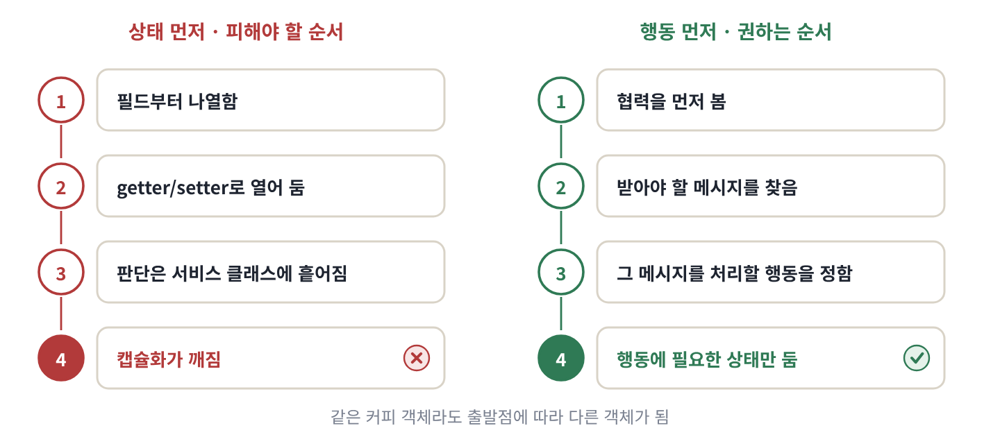
상태부터 정하면 필드가 밖으로 드러나고 판단이 흩어짐. 행동부터 정하면 필요한 상태만 객체 안에 남음
보충 · 실제 사례와 코드
두 설계 순서를 코드로 비교하기 아래 두 클래스는 이름이 같은 커피지만 출발점이 다름. 볼 것은 각 필드가 '왜 있는지' 설명할 수 있는가임.
먼저 상태부터 정한 커피임.
class Coffee {
private String name; // ① 생각나는 데이터를 먼저 나열함
private int price;
private String size;
private int temperature; // ② 누가 쓰는지 아직 모름
private LocalDateTime createdAt;
// getter, setter … // ③ 모두 바깥에 열어 둠
// 행동은 나중에 서비스에서 // ④ 판단은 바깥에서 함
}
①에서 커피에 대해 떠오르는 데이터를 모두 적음.
②의 temperature나 createdAt이 어떤 협력에 쓰일지는 정하지 않았음.
③에서 이 필드들을 getter와 setter로 열어 둠. 이제 누구나 가격을 바꿀 수 있음.
④에서 '사이즈를 올리면 가격은 얼마인가' 같은 판단은 서비스 클래스가 맡게 됨.
다음은 행동부터 정한 커피임.
class Coffee {
private final Menu menu; // ① price()에 필요해서 둠
private Size size; // ② price()와 upsize()에 필요해서 둠
Money price() { // ③ 받아야 할 메시지 1: 가격을 알려 달라
return menu.priceOf(size);
}
void upsize() { // ④ 받아야 할 메시지 2: 사이즈를 올려 달라
size = size.next();
}
}
③과 ④의 메시지를 먼저 정함. 이 커피가 협력에서 받는 요청은 이 두 가지뿐임.
①의 menu는 가격을 계산하려면 필요해서 생긴 필드임.
②의 size는 가격 계산과 사이즈 변경 모두에 필요해서 생긴 필드임.
온도나 만든 시각은 지금의 협력에서 쓰이지 않으므로 아예 없음. 바깥에 드러난 것은 두 행동뿐임.
두 코드를 비교하면 첫 번째는 쓰이지 않을 필드까지 생기고 getter로 상태가 모두 밖에 드러나지만, 두 번째는 행동에 필요한 상태만 있고 밖에는 행동만 드러남.
데이터베이스부터 설계하는 습관과의 관계 실무에서는 테이블 설계(Entity-Relationship Diagram, ERD)를 먼저 하고, 테이블을 그대로 엔티티 클래스로 옮기는 경우가 많음. 이는 상태를 먼저 정하는 설계의 전형적인 형태이며, 결과적으로 맨 끝 논쟁 ①의 빈약한 도메인 모델로 이어지기 쉬움. 저자의 후속작 『오브젝트』는 이를 '데이터 중심 설계'라고 부르며 책임 중심 설계와 자세히 비교함.
행동을 먼저 정하는 실무 기법 테스트 주도 개발(Test-Driven Development, TDD)에서는 객체가 어떻게 동작해야 하는지를 테스트로 먼저 씀. '사이즈를 올리면 가격이 500원 오른다'는 테스트를 먼저 쓰면, 자연스럽게 행동이 상태보다 먼저 정해짐. 1장에서 본 CRC(Class-Responsibility-Collaborator, 클래스-책임-협력자) 카드 역시 필드가 아니라 책임과 협력자를 적음.
한 줄 정리 상태부터 정하면 캡슐화, 협력, 재사용이 모두 나빠짐. 행동을 먼저 정하고 상태는 그 행동에 맞춰 결정함.
논의해 보기
Q. 팀에서 ERD부터 그리는 관행은 버려야 할까?
답 보기
버릴 필요는 없음. 다만 저장 구조와 객체 구조를 같은 것으로 보지 않는 것이 핵심임.
데이터를 어떻게 저장할지는 여전히 중요한 설계임. 조회 성능, 데이터 무결성, 다른 시스템과의 연동 때문에 테이블 구조를 신중하게 정해야 함. 문제는 ERD를 그린 다음 테이블 한 개를 클래스 한 개로, 칸 하나를 필드 하나로 그대로 옮기는 습관임. 그렇게 하면 클래스는 테이블의 복사본이 되고, 행동은 서비스로 흩어짐.
대안은 두 설계를 분리하는 것임. 객체는 협력에서 출발해 '어떤 메시지를 받는가'로 설계하고, 저장은 그 객체의 상태를 어떻게 보관할지의 문제로 따로 다룸. 둘이 같은 모양이 될 수도 있지만, 그것은 결과이지 출발점이 아님.
실제로 규칙이 거의 없는 단순한 기능이라면 ERD에서 출발해도 큰 문제가 없음. 이 판단 기준은 맨 끝 논쟁 ⑤(실용주의)에서 다룸.
2.6 은유와 객체
이 절의 맥락 1장에서 시작한 '현실 모방' 논의를 마무리하는 절임. 현실과 소프트웨어 객체의 관계를 어떤 말로 설명해야 정확한지에 대해 저자가 최종 답을 내놓음.
2.6.1 두 번째 도시전설
요지 '객체지향은 현실 세계의 모방'이라는 통념은 저자가 반박하는 두 번째 오해임.
도시전설은 근거 없이 널리 퍼진 이야기를 말함. 저자는 객체지향에 관한 도시전설 두 가지를 반박함.
첫 번째는 1장에서 다룬 '객체지향의 중심은 클래스'라는 생각임. 저자는 중심이 클래스가 아니라 협력하는 객체라고 답했음.
두 번째가 이 절에서 다루는 '객체지향은 현실 세계를 모방하는 것'이라는 생각임. 입문서에서 흔히 '현실의 사물을 관찰해 소프트웨어 객체로 옮긴다'고 설명하기 때문에 널리 퍼졌음.
저자는 모방이나 추상화라는 말만으로는 현실과 소프트웨어 객체의 관계를 제대로 설명할 수 없다고 봄. 소프트웨어 객체는 현실 객체를 단순화한 것이 아니라, 현실에는 없는 특성을 가지기 때문임. 그 특성이 무엇인지가 다음 목의 주제임.
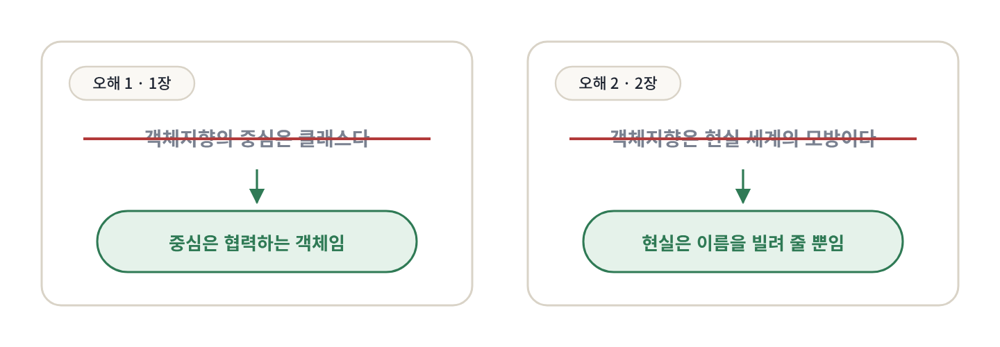
저자가 1장과 2장에서 차례로 반박하는 두 가지 통념
한 줄 정리 현실의 모방이나 단순한 추상화로는 소프트웨어 객체를 설명할 수 없음.
2.6 은유와 객체
2.6.2 의인화
요지 현실에서 수동적인 대상도 소프트웨어 객체가 되면 능동적으로 변함.
현실 객체와 소프트웨어 객체의 가장 큰 차이는 능동성임. 현실의 계좌는 스스로 아무것도 하지 못함. 은행원이 잔액을 확인하고 돈을 내줌. 그런데 소프트웨어의 계좌 객체는 출금 요청을 받으면 스스로 잔액을 확인하고, 부족하면 거절함.
이처럼 사물에 사람처럼 판단하고 행동하는 능력을 부여하는 것을 의인화(anthropomorphism)라고 함. 2.1에서 본 '스스로 켜지는 전등'도 의인화의 예임.
의인화는 소프트웨어 객체가 현실을 단순화한 것이 아니라는 증거임. 단순화했다면 현실보다 능력이 적어야 하는데, 오히려 현실에는 없는 능력을 갖게 되었기 때문임.
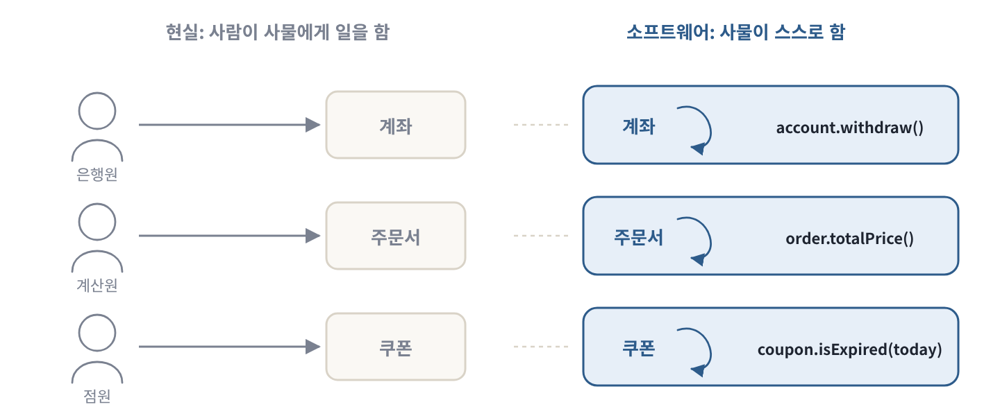
현실에서는 사람이 사물을 다루지만, 소프트웨어에서는 정보를 가진 사물이 스스로 판단하고 행동함
보충 · 실제 사례와 코드
의인화는 책임을 나누는 도구임 현실에서 누가 그 일을 하는지를 그대로 따르면, 모든 판단이 '사람' 역할을 하는 객체에 몰림. BankTeller가 출금을, Cashier가 합계를, Clerk가 쿠폰 확인을 맡는 식임. 그러면 계좌, 주문서, 쿠폰은 데이터만 든 상자가 되고, 판단은 사람 역할의 서비스 객체 몇 개에 몰림.
의인화로 생각하면 방향이 바뀜. '그 정보를 가진 사물이 그 판단을 스스로 한다'고 보면 계좌는 withdraw()를, 주문서는 totalPrice()를, 쿠폰은 isExpired(today)를 가짐. 이는 1장에서 본 정보 전문가 패턴(정보를 가진 객체에게 그 정보에 관한 책임을 맡긴다)과 같은 방향임.
한 줄 정리 의인화 = 현실에서 수동적인 사물에게 스스로 판단하고 행동하는 능력을 주는 것
2.6 은유와 객체
2.6.3 은유
요지 현실과 소프트웨어 객체의 관계를 가장 정확히 설명하는 말은 모방이나 추상화가 아니라 은유임.
전통적인 조언의 한계 객체지향 분석과 설계에서는 오랫동안 '현실 세계의 객체를 자세히 관찰하고, 그중 소프트웨어에 필요한 속성만 추려 내라'고 조언해 왔음. 저자는 이 조언이 실제로는 도움이 되지 않는다고 봄. 2.6.2에서 보았듯이 소프트웨어 객체는 현실 객체에 없는 능력을 갖기 때문에, 현실을 아무리 자세히 관찰해도 그 능력은 보이지 않음.
그렇다고 현실과 무관한 것은 아님 소프트웨어의 Account는 여전히 '계좌'라는 이름을 쓰고, 사람들은 그 이름을 보고 무엇을 하는 객체인지 짐작함. 두 세계는 모방이나 추상화가 아닌 다른 방식으로 연결되어 있음. 그것이 은유(metaphor)임. 은유는 한 대상의 이름과 의미를 다른 대상에 빌려 쓰는 것임. '시간은 돈이다'라고 할 때 시간이 실제로 지폐가 되는 것은 아니지만, 돈의 의미(아껴야 하고, 쓰면 줄어든다)를 빌려 시간을 이해하는 것과 같음.
은유의 효과 현실 객체의 이름을 소프트웨어 객체의 이름으로 쓰면 표현적 차이가 줄어듦. 표현적 차이는 사람이 머릿속에 그리는 개념과 코드 사이의 거리를 말하며, 의미적 차이(semantic gap)라고도 부름.
거리가 가까우면 이름만 보고 무슨 일을 하는지 짐작할 수 있음. Cart라는 이름을 보면 상품을 담고 합계를 계산하리라고 예측할 수 있지만, DataHolder2라는 이름은 코드를 열어 보기 전까지 아무것도 알려 주지 않음. 그래서 은유를 잘 쓰면 소프트웨어의 구조를 예측하기 쉬워지고, 이해하고 유지보수하기 쉬운 코드가 됨. 이 개념은 6장 '객체 지도'에서 도메인 모델과 함께 본격적으로 다룸.
정리하면, 현실과 소프트웨어의 관계를 설명하는 네 단어에 대해 저자의 평가는 이러함. 모방은 현실을 그대로 복사한다는 틀린 설명이고, 추상화는 필요한 속성만 추린다는 부족한 설명임. 의인화는 사물이 스스로 행동하는 소프트웨어 객체의 실제 모습이고, 은유는 이름과 의미만 빌린다는 점에서 관계를 가장 정확히 설명하는 말임.
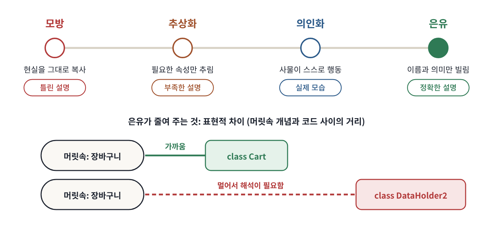
현실과 소프트웨어의 관계를 설명하는 네 단어와 저자의 평가. 은유로 이름을 빌리면 개념과 코드 사이의 거리가 줄어듦
보충 · 실제 사례와 코드
은유로 이름 짓기 장바구니(Cart)는 구매할 상품을 담고 합계를 계산함. 현실의 장바구니와 달리 스스로 합계를 계산한다는 점이 다름. 지갑(Wallet)은 잔액을 관리하고 결제 가능 여부를 판단하며, 스스로 결제를 거절할 수 있음. 방화벽(Firewall)은 네트워크 침입을 막는데, 막는 대상이 불이 아님에도 '위험이 번지지 않게 막는 벽'이라는 의미를 빌려 왔음.
세 이름 모두 듣는 순간 대략적인 역할을 짐작할 수 있음. 이것이 은유가 줄여 주는 표현적 차이임.
반대로 은유가 오해를 낳는 이름도 있음. 예컨대 Manager는 현실의 '관리자'처럼 무엇이든 맡는 객체로 부풀기 쉬움. 이름이 너무 넓은 의미를 빌려 오면, 어떤 책임이든 그 객체에 넣어도 어색하지 않게 되기 때문임.
한 줄 정리 은유 = 현실의 이름과 의미만 빌리는 것. 표현적 차이를 줄여 코드를 이해하기 쉽게 만듦.
2.6 은유와 객체
2.6.4 이상한 나라를 창조하라
요지 설계자의 목적은 현실을 모방하는 것이 아니라, 요구사항을 만족하는 이상한 나라를 창조하는 것임.
소프트웨어 객체가 현실을 닮아야 한다는 제약은 없음. 현실은 이름과 의미를 빌려 주는 은유의 원천일 뿐이고, 능력은 소프트웨어 세계에서 새로 부여함.
앨리스가 들어간 이상한 나라에서는 카드가 걸어 다니고, 토끼가 시계를 보며 말함. 소프트웨어 세계도 마찬가지임. 장바구니가 합계를 계산하고, 쿠폰이 스스로 유효기간을 확인하며, 재고가 없으면 상품이 주문을 거절함. 현실에서는 일어나지 않는 일이지만, 요구사항을 만족하는 데 필요하다면 그렇게 만드는 것이 설계자의 일임.
2장의 제목 '이상한 나라의 객체'가 바로 이 뜻임. 객체는 현실을 닮은 존재가 아니라, 설계자가 만든 이상한 나라의 주민임.
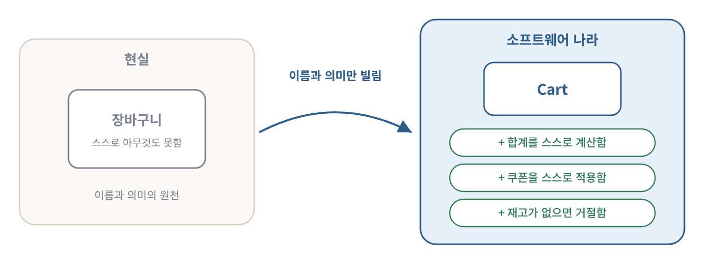
현실은 이름과 의미만 빌려 주고, 능력은 소프트웨어 세계에서 새로 부여함
한 줄 정리 설계의 목적은 현실의 복제가 아니라 새로운 세계의 창조이며, 현실은 이름을 빌려 주는 원천으로만 씀.
논의해 보기
Q. 코드에 있는 Manager, Helper 같은 이름을 은유가 분명한 이름으로 바꿔 보자.
답 보기
그 객체가 실제로 하는 일을 먼저 적고, 그 일을 하는 현실의 사물이나 개념에서 이름을 빌려 오면 됨.
OrderManager를 열어 보니 실제로 하는 일이 할인 금액 계산이라면 DiscountPolicy가 더 정확함. '할인 정책'이라는 이름을 들으면 누구나 '할인을 어떻게 적용하는지 정하는 것'이라고 짐작하기 때문임. StringHelper가 전화번호 형식만 다룬다면 PhoneNumber라는 값 객체로 바꿀 수 있음.
이렇게 바꾸면 두 가지가 좋아짐. 하나는 이름만 보고 역할을 짐작할 수 있어 표현적 차이가 줄어든다는 것임. 다른 하나는 객체가 부풀지 않는다는 것임. Manager에는 무엇을 넣어도 어색하지 않지만, DiscountPolicy에 배송비 계산을 넣으면 바로 어색함이 느껴짐. 이름이 책임의 경계를 지켜 주는 것임.
만약 하는 일이 여러 가지라서 한 이름으로 부를 수 없다면, 이름의 문제가 아니라 책임이 너무 많다는 신호임. 이때는 객체를 나누는 것이 먼저임.
2장 정리
한 문단으로 다시 읽기
사람은 세상을 셀 수 있고 구분되는 객체로 나누어 인식하며, 그 경계는 눈에 보이지 않아도 됨. 객체는 상태, 행동, 식별자를 가진 존재임.
상태는 과거 행동의 결과를 요약한 값이고, 프로퍼티(속성과 링크)와 프로퍼티 값으로 이루어짐. 상태는 행동을 통해서만 바뀌며, 상태를 행동 뒤로 감추면 객체는 자율적이 됨. 식별자가 있는 객체는 엔티티로서 동일성으로 비교하고, 식별자가 없는 값 객체는 불변이며 동등성으로 비교함.
바깥에서 보면 객체는 명령과 쿼리라는 버튼만 보이는 기계이고, 그 기계를 설계할 때는 버튼, 즉 행동부터 정해야 함. 마지막으로 소프트웨어 객체는 현실을 모방한 것이 아니라 이름과 의미만 빌려 온 은유이며, 현실에서는 수동적인 사물도 스스로 판단하는 이상한 나라의 주민임.
인사이트
상태는 '무엇을 기억할까'가 아니라 '무슨 일을 하려면 무엇이 필요한가'에서 정해짐. 클래스를 만들 때 필드 목록부터 적고 싶어지는 순간이 2.5의 함정에 들어서는 순간임.
필드를 하나 추가하려 할 때 '이 필드를 쓰는 행동이 무엇인가'를 물어보면 좋음. 답이 없다면 그 필드는 아직 필요 없거나, 다른 객체에 있어야 하는 것임.
엔티티는 식별자로, 값 객체는 불변으로 다루는 것이 버그를 줄이는 기본 원칙임. 회원을 모든 필드로 비교하면 닉네임만 바꿔도 다른 회원이 되고, 날짜를 가변으로 만들면 공유한 곳이 몰래 바뀜.
새 클래스를 만들 때 '상태가 바뀌어도 같은 것으로 추적해야 하는가'를 먼저 물으면 어느 쪽인지 정해짐.
메서드는 명령이거나 쿼리 중 하나여야 함. 조회만 하려고 불렀는데 상태가 바뀌는 메서드는 디버깅과 테스트를 모두 어렵게 만듦. 이름에 'And'가 들어가는 메서드(withdrawAndGetBalance)는 둘이 섞였다는 신호임.
좋은 이름은 은유로 표현적 차이를 줄이고, 나쁜 이름은 책임을 흐림.Manager와 Helper는 무엇이든 담을 수 있는 이름이라 결국 무엇이든 담기게 됨. 이름이 책임의 경계를 지킨다는 생각으로 지으면 객체가 부풀지 않음.
확인 질문
먼저 스스로 답해 본 뒤 답을 펼쳐 비교함.
Q1. 상태가 없다면 자판기는 음료를 고를 때마다 무엇을 해야 하는가? 상태가 해결하는 문제는 무엇인가?
답 보기
지금까지 넣은 동전과 이미 산 음료를 처음부터 다시 따져야 함. 상태는 과거 행동의 이력을 현재 값 하나로 요약해, 지금 시점만 보고 판단할 수 있게 해 줌.
자판기에 500원, 100원, 500원을 넣고 콜라를 한 번 산 뒤 다시 동전을 넣었다면, 상태가 없는 자판기는 '지금 1,000원짜리를 살 수 있는가'를 알기 위해 이 이력을 모두 다시 계산해야 함. 이력이 길어질수록 계산도 길어지고, 계산을 하는 코드도 복잡해짐.
balance라는 상태가 있으면 이 모든 이력이 '1,200원'이라는 값 하나로 요약되어 있으므로 비교 한 번으로 끝남. 앨리스가 문을 지날 수 있는지 알기 위해 먹고 마신 이력이 아니라 지금 키만 보면 되는 것과 같은 원리임(2.3.1).
Q2. 속성과 링크의 차이를 설명하고, 각각의 예를 들어 보라.
답 보기
속성은 객체를 설명하는 단순한 값이고, 링크는 다른 객체와의 의미 있는 연결임.
회원의 닉네임, 가입일은 속성임. 숫자나 문자열 같은 단순한 값으로 표현되고, 스스로 무슨 일을 하지는 않음. 반면 주문이 참조하는 회원 객체, 앨리스가 들고 있는 음료 객체는 링크임. 연결된 쪽도 자기 행동을 가진 객체임.
둘을 구분하는 이유는 링크가 협력의 통로이기 때문임. 앨리스는 음료와 링크로 연결되어 있어서 음료에게 '마셔졌다'는 메시지를 보낼 수 있음. 속성만 있는 객체는 혼자 일하지만, 링크가 있는 객체는 다른 객체와 협력할 수 있음(2.3.1).
Q3. 회원과 금액 중 어느 것이 엔티티이고 어느 것이 값 객체인가?
답 보기
회원은 엔티티이고, 금액은 값 객체임.
회원은 닉네임, 주소, 등급이 바뀌어도 같은 회원으로 계속 추적해야 함. 그래서 식별자(id)를 두고, 식별자가 같으면 같은 회원으로 봄. 이것이 동일성임.
금액은 1,000원이 어느 지갑에 있든 같은 1,000원임. 따로 추적할 이유가 없으므로 식별자가 필요 없고, 금액이 같으면 같다고 봄. 이것이 동등성임. 또 값이 공유되기 쉬우므로 바뀌지 않게(불변) 만들어야 함.
판단 질문은 '상태가 바뀌어도 같은 것으로 추적해야 하는가'임(2.3.3).
Q4. withdrawAndGetBalance() 같은 메서드는 왜 문제인가?
답 보기
상태 변경(명령)과 조회(쿼리)가 섞여 있어서, 조회만 하고 싶을 때도 상태가 바뀌기 때문임.
잔액을 확인하고 싶을 뿐인데 이 메서드밖에 없다면 출금이 함께 일어남. 그래서 조회를 안심하고 쓸 수 없음. 테스트에서도 결과를 확인하려고 부르면 그 자체가 상태를 바꿔 버림.
withdraw()와 balance()로 나누면, 쿼리인 balance()는 몇 번을 불러도 안전하고 명령인 withdraw()는 상태를 바꾸는 일만 함. 이것이 명령-쿼리 분리(CQS)이며, 기계 은유에서 사각형 버튼과 둥근 버튼을 나눈 이유임(2.4).
Q5. '행동이 상태를 결정한다'를 따르면 상태부터 정하는 설계와 무엇이 달라지는가?
답 보기
필드의 출처가 달라짐. 상태부터 정하면 떠오르는 데이터가 필드가 되고, 행동부터 정하면 행동에 필요한 데이터만 필드가 됨.
상태부터 정하면 필드를 나열하고 getter와 setter로 연 뒤, 판단은 서비스 클래스로 흩어짐. 쓰이지 않는 필드가 생기고, 같은 판단이 여러 곳에 복사됨.
행동부터 정하면 협력에서 받아야 할 메시지를 먼저 찾고, 그 메시지를 처리하는 데 필요한 상태만 객체 안에 둠. 바깥에는 행동만 드러나므로 캡슐화가 지켜지고, 쓰이지 않는 필드가 없으며, 다른 협력에도 다시 쓰기 쉬움.
2.5의 커피 두 벌이 이 차이를 보여 줌. 두 번째 커피의 필드는 모두 'price()에 필요해서', 'upsize()에 필요해서'처럼 존재 이유를 설명할 수 있음.
Q6. 현실과 소프트웨어 객체의 관계를 왜 모방이 아니라 은유라고 하는가?
답 보기
소프트웨어 객체는 현실의 이름과 의미만 빌려 올 뿐, 능력은 현실과 전혀 다르게 새로 부여받기 때문임.
모방이라면 소프트웨어 객체는 현실 객체와 같거나 더 단순해야 함. 그런데 소프트웨어의 계좌는 스스로 잔액을 확인하고, 장바구니는 스스로 합계를 계산함. 현실에는 없는 능력임(의인화).
그럼에도 Account, Cart라는 이름을 쓰는 이유는 사람이 이름만 보고 역할을 짐작할 수 있게 하기 위해서임. 이름과 의미는 빌리고 능력은 새로 주는 것, 이것이 은유임. 은유는 머릿속 개념과 코드 사이의 거리(표현적 차이)를 줄여 코드를 이해하기 쉽게 만듦(2.6.3).
결론
맨 앞의 '이 장에서 배울 것' 여섯 줄에 한 줄씩 답하면 다음과 같음.
이 장에서 배울 것
한 줄 답
다시 볼 곳
① 객체와 그 경계
셀 수 있고 구분되는 단위. 경계가 눈에 보이면 물리적, 생각으로 그으면 개념적 객체
2.1
② 상태, 행동, 식별자
상태는 행동의 요약, 행동은 메시지에 대한 응답, 식별자는 상태가 바뀌어도 같은 존재임을 알려 줌
2.2, 2.3
③ 엔티티와 값 객체
엔티티는 식별자로 비교(동일성), 값 객체는 상태로 비교(동등성)하고 불변
2.3.3
④ 명령과 쿼리
명령은 바꾸고 쿼리는 물음. 섞으면 조회만 해도 상태가 바뀜
2.4
⑤ 행동이 상태를 결정한다
받을 메시지와 행동을 먼저 정하고, 그 행동에 필요한 상태만 둠
2.5
⑥ 모방이 아닌 은유
현실은 이름과 의미만 빌려 주고, 능력은 새로 부여함(의인화)
2.6
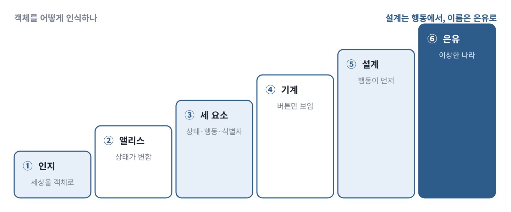
2장의 여섯 가지 목표는 앞 단계 위에 다음 단계가 올라가는 계단 구조임
객체는 상태, 행동, 식별자를 가진 존재이고, 상태는 행동으로만 바뀜. 그러므로 객체를 설계할 때는 '무엇을 저장할까'가 아니라 '무슨 메시지를 받고 어떻게 행동할까'에서 시작함.
다 읽었다면 맨 앞의 '이 장에서 배울 것'으로 돌아가, 위 표를 보지 않고 말할 수 있는 항목에 체크함.
다음 장으로 3장 '타입과 추상화'는 이렇게 만든 수많은 객체를 머릿속에서 어떻게 정리하는지를 다룸. 2장의 '행동이 상태를 결정한다'가 3장에서는 '행동이 타입을 결정한다'로 다시 나옴.
지금의 객체지향: 일곱 가지 논쟁
이 절을 읽기 전에 여기서 '논쟁'은 책이 틀렸다는 뜻이 아님. 책의 주장을 실제 개발에 적용할 때 '어디까지 밀고 갈 것인가'를 두고 개발자들의 의견이 갈리는 지점임. ①~③은 2장의 주장이 실무에서 부딪히는 지점이고, ④~⑦은 1~2장의 객체지향이 요즘 어떻게 쓰이고 보완되는지에 대한 흐름임. 각 논쟁은 같은 순서로 읽으면 됨. 무엇이 쟁점인지 → 일상의 비유로 풀면 어떤지 → 알아 둘 개념과 이론 → 2장과 어떻게 이어지는지 → 코드 → 질문과 답.
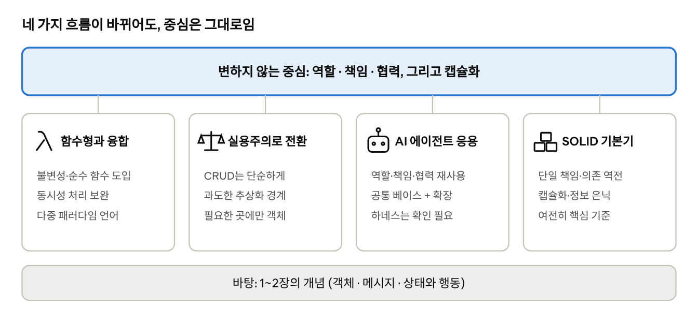
④~⑦에서 다루는 네 가지 흐름을 한 장에 모은 그림임
지금의 객체지향: 일곱 가지 논쟁
① getter와 setter뿐인 객체는 잘못인가: 빈약한 도메인 모델
무엇이 쟁점인가
실무 코드에는 필드와 getter/setter만 있고, 판단은 모두 바깥의 '서비스' 클래스가 하는 구조가 매우 흔함. 이것이 객체지향을 잘못 쓴 것인지, 아니면 상황에 따라 괜찮은 선택인지의 문제임.
쉽게 풀면
getter는 객체의 필드 값을 꺼내는 메서드(getBalance()), setter는 필드 값을 바꾸는 메서드(setBalance())임. getter와 setter만 있는 계좌 객체는 금고가 아니라 뚜껑이 열린 상자와 같음. 누구나 손을 넣어 돈을 꺼내고 넣을 수 있고, '잔액보다 많이 꺼내면 안 된다'는 규칙은 상자가 아니라 상자를 여는 사람마다 따로 기억해야 함.
사람이 다섯 명이면 규칙도 다섯 벌이 되고, 그중 한 명만 깜빡해도 잔액이 음수가 됨.
알아 둘 개념과 이론
마틴 파울러는 2003년 글에서 이 구조를 빈약한 도메인 모델(Anemic Domain Model)이라는 안티패턴으로 불렀음. 겉보기에는 객체지향이지만, 데이터와 그 데이터를 다루는 로직이 분리되어 있어 실제로는 절차형 설계와 같다는 것임. 반대로 규칙이 데이터를 가진 객체 안에 있는 구조를 풍부한 도메인 모델(Rich Domain Model)이라고 부름.
다만 파울러 자신도 모든 경우에 풍부한 모델을 쓰라고 하지는 않았음. 규칙이 거의 없는 단순한 조회와 저장 화면이라면 객체에 행동을 억지로 넣는 것이 오히려 지나친 설계가 될 수 있음. 이 판단 기준은 논쟁 ⑤에서 다룸.
2장과의 연결
빈약한 모델은 2.5의 '상태부터 정하는 설계'가 끝까지 간 모습임. 필드를 먼저 나열하고, getter와 setter로 열어 두고, 판단은 서비스로 흩어짐. 2.3.2의 상태 캡슐화가 깨진 상태이기도 함. 상태가 행동 뒤에 감춰지지 않고 그대로 드러나 있기 때문임.
기준은 간단함. 판단 규칙이 있다면, 그 규칙에 필요한 데이터를 가진 객체 안으로 규칙을 옮김.
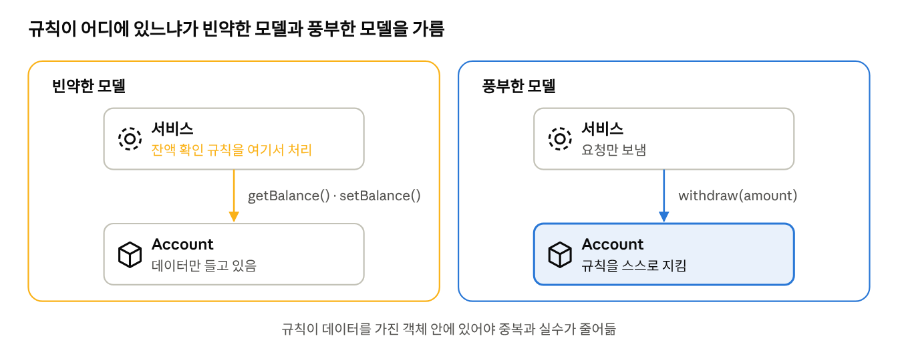
빈약한 모델 vs 풍부한 모델
코드로 보기
아래 코드에서 볼 것은 '잔액이 충분한가'라는 규칙이 어디에 있는가임.
// 빈약한 모델: 규칙이 바깥(서비스)에 있음
if (account.getBalance() >= amount) { // ① 바깥이 상태를 꺼내 판단함
account.setBalance(account.getBalance() - amount);// ② 바깥이 상태를 직접 바꿈
}
// 풍부한 모델: 규칙이 데이터를 가진 객체 안에 있음
account.withdraw(amount); // ③ 부탁만 함
class Account {
private long balance;
void withdraw(long amount) {
if (balance < amount) throw new IllegalStateException("잔액 부족"); // ④ 스스로 판단
balance -= amount; // ⑤ 스스로 바꿈
}
}
①에서 서비스가 getter로 잔액을 꺼내 직접 비교함. 이 비교는 출금하는 모든 곳에 복사되어야 함.
②에서 서비스가 setter로 잔액을 직접 바꿈. 이 줄만 있고 ①이 빠진 코드가 하나라도 생기면 잔액이 음수가 됨.
③에서는 계좌에게 출금해 달라고 부탁만 함. 출금하는 곳이 열 군데여도 이 한 줄이면 됨.
④에서 계좌가 자기 잔액으로 스스로 판단함. 규칙이 이곳 한 군데에만 있음.
⑤에서 계좌가 자기 상태를 바꿈. 바깥에는 setBalance가 아예 없으므로 규칙을 우회할 길이 없음.
Q. 팀 코드가 전부 getter/setter 엔티티와 서비스로 되어 있다면, 어디서부터 바꿔야 할까?
답 보기
같은 규칙이 여러 서비스에 복사되어 있는 곳부터 옮기는 것이 효과가 큼.
전부를 한꺼번에 바꿀 필요는 없음. 먼저 '잔액 확인', '재고 확인', '주문 상태 확인'처럼 여러 서비스에서 같은 if문이 반복되는 곳을 찾음. 그 if문을 데이터를 가진 엔티티의 메서드로 옮기고, 서비스는 그 메서드를 부르게 바꿈.
옮긴 뒤에는 그 필드의 setter를 없앨 수 있는지 확인함. setter가 남아 있으면 누군가 규칙을 우회할 수 있기 때문임.
반대로 규칙 없이 저장하고 조회만 하는 엔티티는 그대로 두어도 됨. 바꾸는 기준은 '이 객체를 쓰는 곳에 판단 로직이 있는가'임.
지금의 객체지향: 일곱 가지 논쟁
② 코드 재사용에는 상속이 정답인가: 상속과 합성
무엇이 쟁점인가
입문서에서 상속을 '코드를 다시 쓰는 수단'으로 배우다 보니, 공통 코드가 보이면 부모 클래스로 올리고 싶어짐. 이것이 좋은 설계인지, 아니면 다른 방법이 나은지의 문제임.
쉽게 풀면
상속(inheritance)은 부모 클래스의 코드를 자식 클래스가 물려받는 것(extends)이고, 합성(composition)은 다른 객체를 필드로 가지고 필요한 일을 그 객체에게 맡기는 것임.
비유하면 상속은 부모의 집을 통째로 물려받는 것이고, 합성은 필요한 가구만 빌려 오는 것임. 집을 통째로 물려받으면 쓰지 않는 방까지 따라오고, 부모가 집 구조를 바꾸면 내 집도 함께 바뀜. 가구만 빌리면 필요한 것만 쓰고, 빌린 가구를 다른 것으로 바꾸기도 쉬움.
알아 둘 개념과 이론
1994년 『Design Patterns』를 쓴 네 명의 저자, 흔히 GoF(Gang of Four)라고 부르는 이들은 '클래스 상속보다 객체 합성을 선호하라'는 원칙을 제시했음. 상속은 부모의 구현 세부까지 자식에게 드러내므로, 부모가 바뀌면 자식이 깨질 수 있음. 이를 흔히 '깨지기 쉬운 부모 클래스 문제'라고 부름.
상속이 어울리는 경우는 따로 있음. 자식이 부모와 같은 역할로 대신 쓰일 수 있을 때임. 이것을 리스코프 치환 원칙이라고 하며, 3장에서 '행위적 호환성'이라는 이름으로 자세히 다룸.
2장과의 연결
상속을 쓰면 부모의 모든 공개 메서드가 자식의 공개 행동이 됨. 2.4의 기계로 말하면, 내가 원하지 않은 버튼까지 기계 바깥에 붙는 것임. 합성을 쓰면 꼭 필요한 버튼만 골라 붙이고, 나머지 부품은 외피 안에 감출 수 있음.
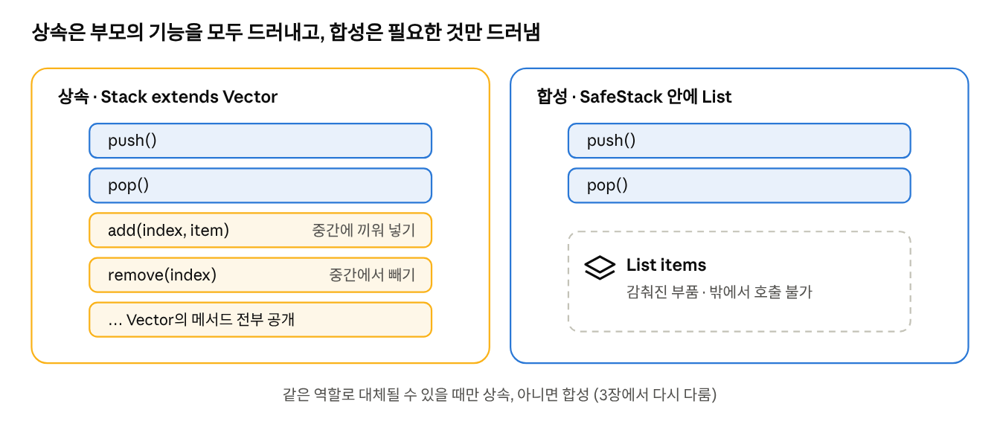
상속 vs 합성 · 드러나는 메서드
코드로 보기
Java의 Stack은 Vector를 상속함. 아래 코드에서 볼 것은 상속 때문에 스택에 원래 없어야 할 버튼이 생겼다는 점임.
// 상속: Java의 Stack은 Vector를 상속함
Stack<Integer> stack = new Stack<>();
stack.push(1); // ① 스택다운 버튼
stack.add(0, 99); // ② Vector에서 물려받은 버튼: 맨 아래에 끼워 넣음
// 합성: 필요한 버튼만 바깥에 드러냄
class SafeStack<T> {
private final List<T> items = new ArrayList<>(); // ③ 내부 부품으로만 둠
void push(T item) { items.add(item); } // ④ 드러낸 버튼 1
T pop() { return items.remove(items.size() - 1); } // ④ 드러낸 버튼 2
}
①의 push는 스택에 맞는 행동임. 맨 위에 하나 올림.
②의 add(0, 99)는 Vector에서 물려받은 메서드로, 맨 아래 칸에 값을 끼워 넣음. '마지막에 넣은 것을 먼저 꺼낸다'는 스택의 규칙이 깨짐. 그런데 컴파일러는 이 호출을 막지 않음.
③의 SafeStack은 목록을 상속하지 않고 필드로 가짐. 목록의 메서드는 바깥에서 보이지 않음.
④에서 스택에 맞는 두 버튼만 골라 바깥에 드러냄. add(0, ...) 같은 호출은 아예 할 수 없음.
Q. 공통 코드가 보이는데 상속을 쓰지 말아야 한다면, 어떻게 재사용하나?
답 보기
공통 코드를 별도의 객체로 빼고, 필요한 클래스가 그 객체를 필드로 가지게 하면 됨(합성).
예를 들어 주문 서비스와 환불 서비스가 둘 다 '금액에 세금 붙이기'를 한다면, BaseService를 만들어 상속하기보다 TaxCalculator라는 객체를 만들고 두 서비스가 각자 가지게 함. 그러면 세금 계산 방식이 바뀌어도 TaxCalculator만 고치면 되고, 두 서비스는 서로 묶이지 않음.
상속을 써도 되는지 판단하는 질문은 '자식을 부모 자리에 넣어도 부모가 약속한 행동을 다 하는가'임. 그렇다면 상속, 단지 코드를 나눠 쓰고 싶을 뿐이라면 합성임.
지금의 객체지향: 일곱 가지 논쟁
③ 데이터와 행동을 다시 나눈다면: 데이터 지향 프로그래밍
무엇이 쟁점인가
객체지향은 데이터와 행동을 한 객체에 묶으라고 함. 그런데 최근 Java를 중심으로 데이터는 불변의 단순한 값으로 두고, 그 데이터를 처리하는 로직은 따로 두자는 데이터 지향 프로그래밍(Data-Oriented Programming, DOP)이 주목받음. 두 방식이 충돌하는지, 아니면 함께 쓸 수 있는지의 문제임.
쉽게 풀면
택배 상자를 떠올리면 됨. 객체지향의 상자는 스스로 '나를 어디로 보내 줘'라고 판단하는 똑똑한 상자임. 데이터 지향의 상자는 내용물과 주소만 적힌 평범한 상자이고, 분류는 물류 센터가 상자에 적힌 정보를 보고 함.
상자 종류가 계속 늘어나는 상황이라면 똑똑한 상자가 편함. 새 상자가 자기 분류 방법을 스스로 들고 오기 때문임. 반대로 상자 종류는 정해져 있고 분류, 포장, 배송 같은 처리가 계속 늘어나는 상황이라면 평범한 상자와 똑똑한 물류 센터가 편함.
알아 둘 개념과 이론
Java 언어 설계를 이끄는 브라이언 고츠(Brian Goetz)가 2022년 글에서 DOP의 원칙을 정리하며 알려졌음. 핵심 원칙은 네 가지임. 데이터는 불변이고 투명하게 둘 것, 데이터를 빠짐없이 그리고 데이터만 모델링할 것, 잘못된 상태는 아예 표현할 수 없게 만들 것, 연산은 데이터와 분리할 것.
최근 Java에 추가된 기능들이 이 방식을 받쳐 줌. record(Java 16)는 불변 데이터 클래스를 한 줄로 선언하고 동등성 비교를 자동으로 만듦. sealed 타입(Java 17)은 어떤 하위 타입만 허용할지 미리 정해 둠. 패턴 매칭(Java 21)은 데이터의 모양에 따라 처리를 나눔. 2026년에는 OpenJDK Amber 프로젝트가 record를 넘어선 'carrier class'를 탐색 중이라는 소식도 있음.
이 문제는 오래된 표현 문제(expression problem)와도 이어짐. 종류가 늘어나는 변화에는 객체지향(다형성)이, 연산이 늘어나는 변화에는 데이터와 연산을 나누는 방식이 유리하다는 것임.
2장과의 연결
DOP가 말하는 '데이터'는 2.3.3의 값 객체와 거의 같음. 식별자가 없고, 불변이며, 동등성으로 비교함. 고츠의 '잘못된 상태는 표현할 수 없게'라는 원칙도 2.3.2의 상태 캡슐화와 목적이 같음.
갈라지는 곳은 '연산은 데이터와 분리'라는 원칙 하나임. 상태가 바뀌며 추적되어야 하는 엔티티(회원, 계좌)는 여전히 행동을 가진 객체로 두는 편이 나음. 그래서 둘 중 하나를 고르는 것이 아니라, '무엇을 객체로, 무엇을 데이터로 둘지'를 구분하는 눈이 핵심임.
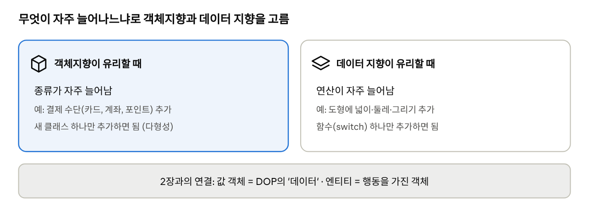
객체지향 vs 데이터 지향 · 언제 무엇을
코드로 보기
아래 코드에서 볼 것은 넓이를 계산하는 area가 도형 안이 아니라 바깥에 있다는 점임.
// record: 2장의 값 객체를 언어가 직접 지원하는 셈임
record Money(long amount, String currency) { }
new Money(1000, "KRW").equals(new Money(1000, "KRW")); // ① true: 동등성
// sealed + 패턴 매칭: 연산이 데이터 밖에 있음
sealed interface Shape permits Circle, Square { } // ② 도형은 이 둘뿐임
record Circle(double r) implements Shape { }
record Square(double side) implements Shape { }
double area(Shape s) { // ③ 연산은 바깥 함수
return switch (s) {
case Circle c -> Math.PI * c.r() * c.r(); // ④ 원이면 이렇게
case Square q -> q.side() * q.side(); // ④ 정사각형이면 이렇게
};
}
①의 record는 필드가 같으면 같다고 판단함. 2.3.3의 값 객체와 같은 동작임.
②의 sealed는 Shape의 하위 타입이 Circle과 Square뿐이라고 못 박음.
③의 area는 도형 바깥에 있는 함수임. 객체지향이었다면 area()를 각 도형 안에 두었을 것임.
④에서 데이터의 모양에 따라 계산을 나눔. 하위 타입이 정해져 있으므로, 하나라도 빠뜨리면 컴파일러가 알려 줌.
이 구조에서는 '둘레 계산'을 추가할 때 도형을 건드리지 않고 함수 하나만 더 만들면 됨. 대신 '삼각형'을 추가하면 모든 switch를 고쳐야 함. 객체지향은 정확히 그 반대임.
Q. 주문 시스템에서 무엇을 record(데이터)로, 무엇을 객체로 두는 것이 좋을까?
답 보기
금액, 주소, 주문 항목처럼 식별자가 없고 바뀌지 않는 값은 record로, 주문과 회원처럼 상태가 바뀌며 추적되는 것은 행동을 가진 객체로 두는 것이 자연스러움.
금액은 1,000원이 어디에 있든 같은 1,000원이고 바뀌지 않아야 하므로 record가 잘 맞음. 반면 주문은 '결제 대기 → 결제 완료 → 배송 중'처럼 상태가 바뀌고, '결제 전에는 배송할 수 없다' 같은 규칙을 스스로 지켜야 함. 이런 규칙을 바깥 함수에 두면 논쟁 ①의 빈약한 모델이 됨.
결국 2.3.3의 엔티티와 값 객체 구분이 그대로 기준이 됨. DOP는 값 객체를 더 쉽고 안전하게 만들도록 도와주는 흐름으로 보면 됨.
지금의 객체지향: 일곱 가지 논쟁
④ 객체지향과 함수형은 섞어 쓴다: 함수형 프로그래밍과의 융합
무엇이 쟁점인가
한때는 '객체지향이냐 함수형이냐'를 두고 어느 쪽이 나은지 다투었음. 지금은 주요 객체지향 언어가 함수형 요소를 기본으로 지원하고, 객체지향 구조 안에 함수형의 장점을 섞어 쓰는 것이 표준이 되었음. 무엇을 어디까지 섞을지가 쟁점임.
쉽게 풀면
함수형 프로그래밍(Functional Programming, FP)은 상태를 바꾸지 않는 함수를 조합해 프로그램을 만드는 방식임. 계산기를 떠올리면 됨. 2 더하기 3은 언제 눌러도 5이고, 계산기를 누른다고 다른 무엇이 바뀌지 않음.
객체지향의 객체는 상태를 가진 자판기에 가까움. 같은 버튼을 눌러도 안에 든 돈에 따라 결과가 다름. 둘을 섞는다는 것은, 자판기 안의 계산 부분은 계산기처럼 만들고 상태 변경은 자판기 안에만 가두는 것임.
알아 둘 개념과 이론
순수 함수는 같은 입력에는 항상 같은 출력을 내고, 바깥 상태를 바꾸지 않는 함수임. 불변성은 한 번 만든 값은 바꾸지 않고, 바꾸고 싶으면 새 값을 만드는 성질임.
이 둘이 요즘 특히 중요해진 이유는 동시성임. 여러 스레드가 같은 값을 동시에 읽고 쓰면 값이 얽히는 경쟁 상태(race condition)가 생기고, 이를 막으려면 락 같은 보호 장치가 필요함. 어느 스레드가 언제 바꿨는지 추적하기도 어려움. 반면 불변 값은 아무도 바꿀 수 없으므로 그냥 나눠 써도 안전하고, 버그를 찾을 때도 만든 곳만 보면 됨.
Java(8부터 람다와 스트림), Kotlin, C++(11부터 람다) 같은 주요 언어는 모두 객체와 함수형 요소를 함께 지원하는 다중 패러다임 언어임.
2장과의 연결
2.3.3의 '값 객체는 불변이어야 한다'는 조언이 곧 함수형의 불변성임. 2.4의 쿼리(상태를 바꾸지 않는 조회)는 순수 함수에 가까움.
2.3.2의 보충에서 보았듯이 객체지향은 상태 변경을 없애지 않고 객체 안에 가둠. 함수형은 상태 변경 자체를 줄임. 두 방식은 '변경을 통제한다'는 같은 목표를 다른 길로 이루는 것이라, 서로 대립하기보다 보완함.
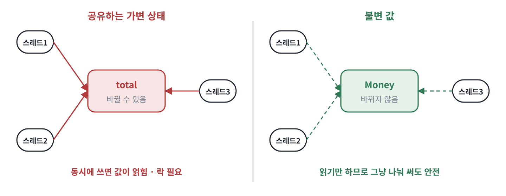
여러 스레드가 바뀔 수 있는 값을 함께 쓰면 보호 장치가 필요하지만, 불변 값은 그냥 나눠 써도 안전함
코드로 보기
아래 두 코드는 '결제된 주문의 금액만 모으기'라는 같은 일을 함. 볼 것은 바깥 리스트를 바꾸느냐, 새 결과를 만드느냐임.
// 명령형: 바깥 리스트(paid)를 계속 바꿈
List<Money> paid = new ArrayList<>(); // ① 빈 리스트를 만들고
for (Order o : orders) {
if (o.isPaid()) paid.add(o.amount()); // ② 조건에 맞으면 하나씩 추가함
}
// 함수형 스타일: 원본을 바꾸지 않고 새 결과를 만듦
List<Money> paid = orders.stream() // ③ 주문 목록을 흐름으로 바꿈
.filter(Order::isPaid) // ④ 결제된 것만 남김
.map(Order::amount) // ⑤ 금액으로 바꿈
.toList(); // ⑥ 불변 리스트로 모음
①과 ②는 빈 리스트를 만들어 두고 반복문 안에서 계속 바꿈. 중간에 다른 코드가 paid를 건드리면 결과가 달라질 수 있음.
③에서 주문 목록을 하나씩 흘려보내는 흐름(stream)으로 바꿈. 원본 orders는 바뀌지 않음.
④의 filter는 조건에 맞는 것만 통과시키고, ⑤의 map은 주문을 금액으로 바꿈. 둘 다 바깥 상태를 바꾸지 않는 순수한 단계임.
⑥에서 결과를 불변 리스트로 모음. 이후 누구도 이 리스트를 바꿀 수 없음.
isPaid()와 amount()는 주문 객체의 쿼리임. 객체가 자기 판단(결제 여부)을 하고, 함수형 흐름이 그 판단들을 조립하는 구조라 두 방식이 자연스럽게 섞여 있음.
Q. 모든 것을 불변으로 만들면 객체지향의 '상태'는 어떻게 되나?
답 보기
상태가 바뀌는 대신, 새 상태를 가진 객체가 만들어지는 방식으로 표현됨. 다만 실무에서는 엔티티의 상태 변경은 객체 안에 가두고, 값은 불변으로 두는 혼합형이 일반적임.
예를 들어 불변 주문 객체라면 order.pay()가 자기 상태를 바꾸지 않고 '결제 완료 상태의 새 주문'을 돌려줌. 이렇게 하면 동시성 문제가 줄고, 이전 상태도 그대로 남아 있음.
하지만 이 방식은 객체가 크거나 자주 바뀌면 새 객체를 계속 만들어야 하고, 같은 주문을 가리키는 곳들을 모두 새 객체로 바꿔 줘야 하는 부담이 있음. 그래서 회원이나 주문처럼 식별자로 추적하는 엔티티는 상태 변경을 객체 안에 가두고(캡슐화), 금액과 날짜 같은 값은 불변으로 두는 것이 2장의 구분과도 맞고 현실적으로도 많이 쓰임.
지금의 객체지향: 일곱 가지 논쟁
⑤ 객체지향은 어디까지 써야 하나: 실용주의
무엇이 쟁점인가
한때는 모든 코드를 클래스, 인터페이스, 상속 계층으로 만드는 것이 좋은 설계로 여겨졌음. 지금은 '문제에 맞는 만큼만' 객체지향을 쓰자는 쪽으로 인식이 바뀜. 어디까지가 '맞는 만큼'인지가 쟁점임.
쉽게 풀면
라면 하나 끓이는 데 주방 설계도를 그리지는 않음. 하지만 하루 수백 명이 먹는 식당 주방을 설계도 없이 만들면 금방 엉망이 됨. 도구의 크기는 일의 크기에 맞춰야 함.
게시판에 글을 저장하고 보여 주기만 하는 기능에 역할, 책임, 협력을 꼼꼼히 설계하면 코드만 늘고 얻는 것이 적음. 반대로 할인, 환불, 정산처럼 규칙이 많고 자주 바뀌는 기능을 함수 몇 개로 처리하면 규칙이 바뀔 때마다 여기저기를 고쳐야 함.
알아 둘 개념과 이론
CRUD는 Create(생성), Read(조회), Update(수정), Delete(삭제)의 앞글자로, 데이터를 저장하고 꺼내는 것이 주된 기능인 경우를 말함.
마틴 파울러는 업무 로직을 구성하는 방식을 둘로 나누었음. 트랜잭션 스크립트(Transaction Script)는 요청 하나를 처음부터 끝까지 한 함수에서 처리하는 절차형 방식이고, 도메인 모델(Domain Model)은 책임을 가진 객체들이 협력하는 방식임. 규칙이 적으면 트랜잭션 스크립트가 더 읽기 쉽고, 규칙이 많아질수록 도메인 모델이 유리해짐.
과도한 추상화를 경계하는 원칙으로는 YAGNI(You Aren't Gonna Need It, 지금 필요 없는 것은 만들지 말라)가 자주 언급됨. 구현체가 하나뿐인 인터페이스, 쓰임새가 하나뿐인 깊은 상속 계층은 대개 필요해질 때 만들어도 늦지 않음.
2장과의 연결
저자가 말하는 것은 '클래스를 많이 만들어라'가 아니라 '협력에 맞는 책임을 찾아라'임. 협력할 규칙이 없는 곳에 억지로 객체를 만들 필요는 없음. 논쟁 ①에서 빈약한 모델이 '괜찮을 때도 있다'고 한 것과 같은 결론임.
거꾸로 보면, 객체지향이 빛나는 곳은 2.5에서 본 것처럼 행동이 많고 그 행동이 상태에 따라 달라지는 곳임. 규칙이 많을수록 '행동이 상태를 결정한다'는 원칙이 큰 차이를 만듦.
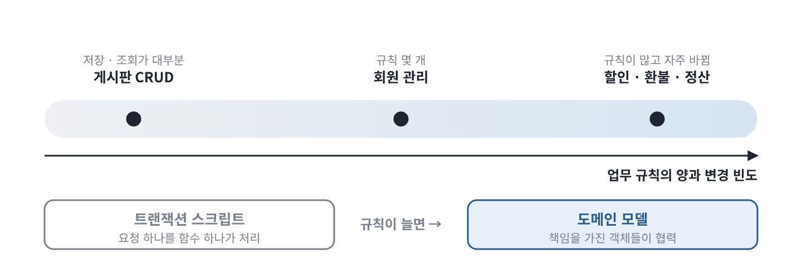
규칙이 적은 곳은 단순한 절차형으로, 규칙이 많고 자주 바뀌는 곳은 객체지향으로 고르는 것이 실용주의임
코드로 보기
아래 코드에서 볼 것은 같은 '글 저장' 기능이 두 방식에서 얼마나 다른 양의 코드를 필요로 하는가임.
// 규칙이 거의 없는 기능: 트랜잭션 스크립트로 충분함
void createPost(String title, String body) {
postRepository.save(new Post(title, body)); // ① 저장하고 끝
}
// 과도한 추상화의 예
interface PostCreator { void create(String t, String b); } // ② 구현이 하나뿐인 인터페이스
class DefaultPostCreator implements PostCreator { // ③ 그 하나뿐인 구현
public void create(String t, String b) { postRepository.save(new Post(t, b)); }
}
①은 규칙 없이 저장만 하므로 함수 한 줄로 충분함.
②의 인터페이스는 구현이 하나뿐이고 바뀔 계획도 없음. 읽는 사람은 '다른 구현이 있나?' 하고 찾아봐야 함.
③은 ①과 똑같은 일을 하면서 파일과 이름만 늘었음.
반대로 할인 규칙이 회원 등급, 쿠폰, 기간마다 다르고 자주 바뀐다면, 그때는 DiscountPolicy 같은 역할을 만들고 규칙마다 객체를 나누는 것이 맞음. 기준은 '바뀌는 규칙이 있는가'임.
Q. 처음에는 단순한 CRUD였는데 규칙이 점점 늘어난다면 언제 객체지향으로 바꿔야 할까?
답 보기
같은 규칙이 두세 군데에 복사되기 시작하거나, 규칙 하나를 바꾸려고 여러 함수를 함께 고쳐야 할 때가 신호임.
처음부터 도메인 모델로 설계하면 아직 오지 않은 변화를 위해 코드를 늘리는 셈이고(YAGNI), 끝까지 트랜잭션 스크립트로 버티면 규칙이 함수들 사이에 흩어짐. 그래서 변화가 실제로 보이는 시점에 옮기는 것이 실용적임.
옮기는 방법은 논쟁 ①의 답과 같음. 반복되는 판단을 데이터를 가진 객체의 메서드로 옮기고, 규칙의 종류가 여러 개로 갈라지면 그때 역할(인터페이스)을 만들어 나눔. 테스트가 있으면 이 옮기는 작업을 안전하게 할 수 있음.
지금의 객체지향: 일곱 가지 논쟁
⑥ 객체 대신 AI 에이전트가 협력한다면: 계층적 에이전트 하네스
확인 필요 이 항목은 출처가 영상 한 편이고 내용을 아직 직접 확인하지 못했음. 아래 코드는 개념 이해를 돕기 위한 스케치이며, 실제 사례는 영상을 보고 덧붙일 예정임.
무엇이 쟁점인가
여러 AI 에이전트에게 역할을 나누어 맡기는 설계가 늘면서, 에이전트들의 공통 코드를 어떻게 구성할지가 새로운 설계 문제가 되었음. 그중 하나로 공통 베이스를 두고 에이전트마다 필요한 부분만 바꾸는 계층적 에이전트 하네스가 거론됨. 여러 에이전트에게 역할을 나누는 설계 자체는 1장 정리의 더 살펴보기 ③에 있음.
쉽게 풀면
하네스(harness)는 에이전트를 실행하는 틀임. 모델 호출, 도구 사용, 반복 루프 같은 공통 코드를 담음.
요리 대회의 규칙을 떠올리면 됨. 모든 참가자는 '재료 받기 → 요리하기 → 심사받기'라는 같은 순서를 따름. 순서는 대회가 정하고, 참가자는 '요리하기' 단계에서만 자기 실력을 보임. 에이전트 하네스도 '계획 → 실행 → 검토'라는 순서는 베이스가 정하고, 에이전트마다 '실행' 단계만 다르게 채움.
알아 둘 개념과 이론
이 구조는 GoF 디자인 패턴의 템플릿 메서드 패턴과 같음. 알고리즘의 뼈대(순서)는 부모 클래스가 정하고, 단계 중 일부만 자식 클래스가 채우는 패턴임. 부모의 실행 메서드는 final로 막아 자식이 순서를 바꿀 수 없게 하는 것이 일반적임.
2장과의 연결
논쟁 ②에서 '같은 역할로 대신 쓰일 수 있을 때만 상속하라'고 했음. 여기서 상속이 어울리는 이유가 바로 그것임. 모든 에이전트가 BaseAgent라는 같은 역할로 대신 쓰일 수 있기 때문임. 실행하는 쪽은 어떤 에이전트인지 몰라도 run()만 부르면 됨.
반대로 검색이나 파일 읽기 같은 도구를 에이전트에 붙이는 일은 합성이 더 자연스러움. 도구는 에이전트의 일종이 아니라 에이전트가 쓰는 부품이기 때문임.
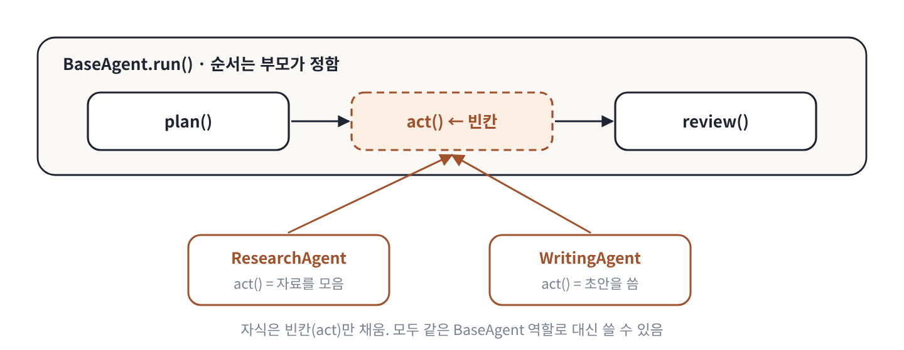
템플릿 메서드 패턴: 공통 순서는 부모가 쥐고, 달라지는 한 단계만 자식이 채움
코드로 보기
아래 코드에서 볼 것은 순서를 정하는 run()이 부모에만 있고, 자식은 act() 하나만 채운다는 점임.
abstract class BaseAgent {
final Result run(Task task) { // ① 순서는 부모가 정함. final이라 못 바꿈
Plan plan = plan(task); // ② 공통 단계
Draft draft = act(plan); // ③ 에이전트마다 다른 단계
return review(draft); // ② 공통 단계
}
abstract Draft act(Plan plan); // ④ 자식이 채울 빈칸
}
class ResearchAgent extends BaseAgent {
Draft act(Plan plan) { /* 자료 수집 */ } // ⑤ 빈칸만 채움
}
①의 run()이 '계획 → 실행 → 검토' 순서를 정함. final이므로 자식이 이 순서를 바꿀 수 없음.
②의 plan과 review는 모든 에이전트가 같이 쓰는 단계임.
③의 act가 에이전트마다 달라지는 단계임.
④에서 act를 abstract로 비워 두어, 자식이 반드시 채우게 함.
⑤의 ResearchAgent는 act 하나만 구현함. 나머지 흐름은 부모가 알아서 진행함.
Q. 에이전트에게 검색 도구를 붙일 때도 상속을 쓰면 안 될까?
답 보기
쓰지 않는 편이 나음. 도구는 합성으로 붙이는 것이 자연스러움.
SearchingResearchAgent extends ResearchAgent처럼 도구마다 상속을 늘리면, 검색과 파일 읽기를 둘 다 쓰는 에이전트가 필요할 때 클래스가 조합의 수만큼 늘어남. 도구가 세 개면 조합은 여덟 가지가 됨.
대신 에이전트가 List<Tool> tools를 필드로 가지고, 필요할 때 도구에게 일을 맡기면 도구를 자유롭게 넣고 뺄 수 있음. '에이전트는 도구의 일종인가?'라고 물으면 아니라는 답이 나오므로, 상속이 아니라 합성이 맞음.
지금의 객체지향: 일곱 가지 논쟁
⑦ 여전히 유효한 기본기: SOLID
무엇이 쟁점인가
언어와 도구가 빠르게 바뀌는데, 20년도 더 된 설계 원칙이 여전히 의미가 있는지의 문제임. 결론부터 말하면 대규모 시스템에서 결합도를 낮추고 확장을 쉽게 하는 기준으로 여전히 널리 쓰임.
쉽게 풀면
SOLID는 로버트 C. 마틴이 정리한 객체지향 설계 원칙 다섯 개의 앞글자임. 다섯 원칙 모두 한 가지 목표로 모임. '바뀔 때 적게 고치기'임.
콘센트를 떠올리면 됨. 벽의 콘센트는 '전기를 주는 역할'만 약속하고, 거기에 꽂히는 것이 청소기인지 충전기인지 모름. 그래서 새 가전을 사도 벽을 뜯을 필요가 없음. SOLID는 코드에서 이런 콘센트를 만드는 방법을 다섯 방향으로 정리한 것임.
알아 둘 개념과 이론
단일 책임 원칙(Single Responsibility Principle, SRP)은 클래스가 바뀌는 이유가 하나여야 한다는 것임. 1장의 책임을 알맞게 나누는 일과 같음.
개방-폐쇄 원칙(Open-Closed Principle, OCP)은 기능을 추가할 때 기존 코드는 고치지 않아야 한다는 것임. 1장에서 새 바리스타를 추가해도 손님 코드는 그대로인 것이 이 원칙임.
리스코프 치환 원칙(Liskov Substitution Principle, LSP)은 자식이 부모를 대신해도 문제가 없어야 한다는 것임. 1장의 대체 가능성이고, 3장에서 행위적 호환성으로 다시 나옴.
인터페이스 분리 원칙(Interface Segregation Principle, ISP)은 쓰지 않는 메서드에 의존하지 않도록 인터페이스를 작게 나누라는 것임. 협력에 필요한 책임만 역할로 묶는 것과 같음.
의존 역전 원칙(Dependency Inversion Principle, DIP)은 구체적인 구현이 아니라 추상(역할)에 의존하라는 것임. 1장의 '메시지만 알고 메서드는 모른다'와 같은 생각임.
2장과의 연결
SOLID는 새로운 이론이라기보다 1장의 역할, 책임, 협력을 코드 규칙으로 바꿔 적은 것에 가까움. 그리고 그 밑바탕에는 2장의 캡슐화가 있음.
2.3.2(상태 캡슐화)와 2.4(버튼만 보이는 기계)에서 본 '안은 감추고 행동만 드러낸다'는 원리가, 클래스 하나가 아니라 모듈과 서비스 단위에서도 그대로 쓰임. 의존 역전은 그중에서도 '버튼(역할)만 알면 기계 안(구현)은 몰라도 된다'를 시스템 전체로 넓힌 것임.
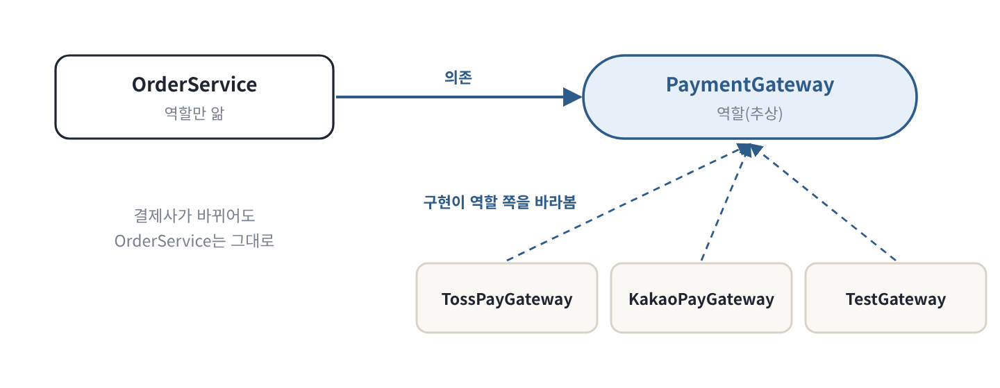
의존 역전: 주문 서비스는 구체적인 결제사가 아니라 결제라는 역할에 의존하고, 구현들이 그 역할을 따름
코드로 보기
아래 코드에서 볼 것은 OrderService 안에 '토스'나 '카카오' 같은 결제사 이름이 한 번도 나오지 않는다는 점임.
interface PaymentGateway { void pay(Money amount); } // ① 역할(추상)
class OrderService {
private final PaymentGateway gateway; // ② 역할에만 의존함
OrderService(PaymentGateway gateway) { // ③ 구현은 바깥에서 넣어 줌
this.gateway = gateway;
}
void checkout(Order order) { gateway.pay(order.amount()); } // ④ 메시지만 보냄
}
class TossPayGateway implements PaymentGateway { ... } // ⑤ 구현은 역할을 따름
①의 PaymentGateway는 '결제한다'는 역할만 정의함.
②에서 OrderService는 구체적인 결제사가 아니라 이 역할에만 의존함.
③에서 실제로 어떤 결제사를 쓸지는 OrderService를 만드는 바깥에서 정해 넣어 줌.
④에서 OrderService는 pay라는 메시지만 보냄. 어떤 결제사가 어떻게 처리하는지는 모름.
⑤의 결제사 구현이 역할을 따름. 결제사를 바꾸거나 테스트용 가짜 결제사를 넣어도 OrderService는 한 줄도 고치지 않음.
Q. SOLID를 모두 지키면 좋은 설계가 되나?
답 보기
아님. SOLID는 바뀔 때 적게 고치기 위한 도구이고, 바뀔 일이 없는 곳에까지 적용하면 오히려 코드만 복잡해짐.
예를 들어 결제사가 하나뿐이고 바뀔 계획도 없는데 PaymentGateway 인터페이스를 만들면, 논쟁 ⑤에서 본 '구현이 하나뿐인 인터페이스'가 됨. 의존 역전이 가치를 가지는 것은 구현이 여러 개이거나, 테스트에서 가짜 구현으로 바꿔 끼워야 할 때임.
그래서 SOLID는 '지켜야 할 법'이라기보다 '변경이 아플 때 무엇을 고칠지 알려 주는 진단표'로 보는 것이 좋음. 한 클래스를 고칠 이유가 여러 개라면 SRP를, 새 기능마다 기존 코드를 고친다면 OCP를 떠올리는 식임. 출발점은 언제나 1~2장처럼 협력과 책임임.
지금의 객체지향: 일곱 가지 논쟁
정리: 변하는 것과 변하지 않는 것
일곱 가지 논쟁을 겹쳐 보면, 바뀌는 것은 도구이고 바뀌지 않는 것은 목표임. 함수형 요소를 섞어 쓰고, record 같은 새 문법이 생기고, 필요한 곳에만 객체를 만들고, 객체 대신 AI 에이전트가 협력하기도 함. 그러나 변경을 통제하려는 목표(캡슐화와 불변), 책임을 알맞은 곳에 두는 일, 역할과 책임과 협력으로 생각하는 법은 그대로임. 2장의 상태, 행동, 식별자는 이 모든 논쟁의 바닥에 깔린 공통 어휘임.
동전을 넣고, 음료를 고르고, 잔돈을 돌려받는 협력에서 자판기가 받아야 할 메시지를 먼저 적음
각 메시지를 명령과 쿼리로 분류함
그 메시지를 처리하는 데 필요한 상태만 골라 적음
자판기, 음료, 동전 중 무엇이 엔티티이고 무엇이 값 객체인지 구분함
예시 풀이 먼저 메시지를 적음. 손님은 자판기에게 '동전을 넣는다(insert)', '음료를 고른다(select)', '잔돈을 돌려 달라(refund)', '지금 얼마 남았나(balance)'를 요청함. 관리자는 '음료를 채운다(restock)'를 요청함.
다음으로 분류함. insert, select, refund, restock은 자판기의 상태를 바꾸므로 명령이고, balance는 묻기만 하므로 쿼리임. select가 음료를 돌려주기는 하지만, 이는 '꺼내기'라는 동작 자체가 결과물이라 pop()과 비슷한 관례적 예외로 볼 수 있음.
그다음 상태를 고름. insert와 select와 refund를 처리하려면 투입 금액(balance)이 필요하고, select와 restock을 처리하려면 음료별 재고가 필요함. 자판기의 색깔, 설치 날짜 같은 것은 이 협력에서 쓰이지 않으므로 넣지 않음. 행동이 상태를 결정한 것임.
마지막으로 구분함. 자판기는 재고와 잔액이 바뀌어도 같은 기계로 추적해야 하므로 엔티티임(기계 번호가 식별자). 동전과 금액은 500원이 어느 자판기에 있든 같은 500원이므로 값 객체임. 음료는 상황에 따라 다름. '콜라라는 상품'은 이름과 가격만 같으면 같은 것으로 보아도 되므로 값 객체로 다룰 수 있지만, 유통기한을 개별로 추적해야 한다면 캔 하나하나가 엔티티가 됨.